RE-01 — Galilean Relativity & Its Failure
Relativity trunk · RE/RE-01_galilean_relativity · open in the Teaching Network
The Galilean transformation r' = r − Vt, t' = t; its invariance for Newton's laws (acceleration, hence F=ma, is unchanged) but not for Maxwell's equations (which carry a fixed c); the consequent ether hypothesis; and the Michelson–Morley experiment, whose predicted ~0.4-fringe shift was never seen — the empirical death of Galilean relativity for light.
Key equations
Figures
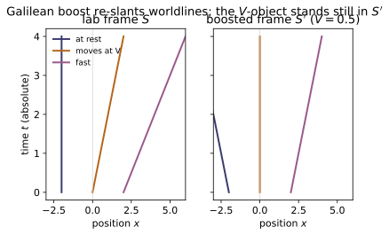
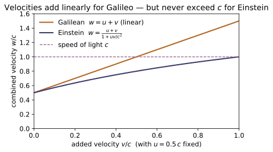
Example problems
Two particles approach each other, each at 0.7c in the lab. What does Galilean addition predict for their closing speed, and why is it unphysical? Answer: Galilean: 1.4c (faster than light!); the relativistic rule gives (0.7+0.7)/(1+0.49) = 0.94c. Check: galilean_velocity_add(0.7,0.7)=1.4 vs relativistic_velocity_add(0.7c,0.7c,c)/c ≈ 0.9396.
Galilean addition just sums collinear speeds, so the rule assigns one particle a speed $0.7c+0.7c=1.4c$ in the other's rest frame — a material body faster than light, which no inertial observer can measure (it would outrun a light signal). The correct composition law caps it:
(The lab closing rate of the gap may legitimately read $1.4c$ — that is a coordinate rate, not anyone's velocity.) So galilean_velocity_add(0.7,0.7)$=1.4$ overshoots $c$, while relativistic_velocity_add(0.7c,0.7c,c)/c$=0.9396$ stays sub-luminal.
Show that Einstein's velocity-addition rule (u+v)/(1+uv/c²) becomes the Galilean u+v as c→∞, and estimate the fractional error at everyday speeds (u=v=30 m/s). Answer: error ≈ uv(u+v)/c² ≈ 6×10⁻¹⁵ m/s — utterly negligible. Check: galilean_limit_error(30, 30, c) and watch it fall as 1/c².
Expand Einstein's rule for $uv/c^2\ll1$:
so $w\to u+v$ as $c\to\infty$ and the leading defect is $uv(u+v)/c^2\propto1/c^2$. At $u=v=30$ m/s this is $\tfrac{30\cdot30\cdot60}{c^2}\approx6\times10^{-13}$ m/s on a $60$ m/s sum (a fractional $uv/c^2\sim10^{-14}$) — utterly negligible. galilean_limit_error(30,30,c) returns exactly this $6.0\times10^{-13}$, and because the error $\propto1/c^2$ each tenfold increase in $c$ shrinks it about a hundredfold — Galilean addition is the low-speed limit.
Show that a Galilean boost leaves acceleration unchanged (a'=a) so F=ma is invariant, but that the same boost gives a frame-dependent light speed c±v. Check: galilean_invariant_acceleration(9.81, V) for any V; contrast light_speed_galilean(30e3, c) ≠ c.
Under a constant-velocity boost $\mathbf v'=\mathbf v-\mathbf V$ with $\mathbf V$ fixed, differentiate once more (and $t'=t$):
since $d\mathbf V/dt=0$. With $m$ unchanged, $\mathbf F=m\mathbf a$ keeps its form — Newton is Galilean-invariant for any boost, so galilean_invariant_acceleration(9.81, V)$=9.81$. But the same rule applied to light gives a frame-dependent speed $c\pm V$: met head-on, $c+v=$ light_speed_galilean(30e3, c)$=299\,822\,458$ m/s $\neq c$. Newton survives the boost; Maxwell's fixed $c$ does not — the contradiction that forces new kinematics.
For arm length L=11 m, wavelength λ=500 nm, and Earth's orbital speed v=30 km/s, compute the fringe shift expected on a 90° rotation. Answer: ΔN = (2L/λ)(v/c)² ≈ 0.44 fringe — easily visible, yet not seen. Check: michelson_morley_shift(30e3, 11.0, 500e-9) ≈ 0.44; verify it scales as (v/c)².
Riding the ether wind the two arms have unequal round-trip times, differing to leading order by $\Delta t\approx(L/c)(v/c)^2$. A $90^\circ$ rotation swaps the fast and slow arms, doubling the optical path difference to $2c\,\Delta t$, so the fringe count shifts by
With $L=11$ m, $\lambda=500$ nm and $v/c\approx1.0\times10^{-4}$: $\tfrac{2L}{\lambda}=4.4\times10^{7}$ and $(v/c)^2=1.0\times10^{-8}$, giving $\Delta N\approx0.44$ — matching michelson_morley_shift(30e3, 11.0, 500e-9)$=0.44$. The $(v/c)^2$ scaling means doubling $v$ quadruples the shift; yet the observed shift was $\sim0$.
The ether-wind time difference is Δt ≈ (L/c)(v/c)². Evaluate it for the numbers above and confirm the fringe shift equals 2cΔt/λ. Check: ether_wind_dt(30e3, 11.0) ≈ 3.7×10⁻¹⁶ s, and 2·c·ether_wind_dt(...)/λ reproduces michelson_morley_shift(...).
Expand the exact arm times $t_\parallel=\tfrac{2L/c}{1-\beta^2}$, $t_\perp=\tfrac{2L/c}{\sqrt{1-\beta^2}}$ with $\beta=v/c$:
For $L=11$ m and $\beta\approx1.0\times10^{-4}$, $\Delta t\approx(11/c)(1.0\times10^{-8})\approx3.7\times10^{-16}$ s, i.e. ether_wind_dt(30e3, 11.0)$=3.67\times10^{-16}$. The $90^\circ$ rotation turns this into a fringe shift $2c\,\Delta t/\lambda=0.44$, reproducing michelson_morley_shift(...) and confirming $\Delta N=2c\,\Delta t/\lambda$.
Argue that if c is the same in every frame (RE-02), the linear coordinate map that keeps the light cone fixed cannot be Galilean — it must mix space and time. That map is the Lorentz transformation (RE-03), of which the Galilean one here is the c→∞ corner. Answer: No — keeping the light cone $x=\pm ct$ fixed in every frame forces the map to mix $t$ and $x$ (you cannot hold $t'=t$); that mixing is the Lorentz transformation, with Galilean as its $c\to\infty$ corner.
Homogeneity of spacetime makes the frame-to-frame map linear. If $c$ is the same in every frame (RE-02), the two light worldlines $x=ct$ and $x=-ct$ must each map onto themselves. A Galilean boost keeps $t'=t$ and shears only space, sending $x=ct$ to $x'=(c-V)t$ — a different slope, so it tilts the light cone and fails. The only linear maps that pin both null lines while leaving $-(ct)^2+x^2$ invariant are the hyperbolic rotations
which necessarily transform time as well as space. That is the Lorentz transformation (RE-03); letting $c\to\infty$ ($\beta\to0,\ \gamma\to1$) kills the $\beta x$ term and returns the Galilean map — exactly the limit galilean_limit_error$\to0$ measured in P2.
Run the worked code: cd RE/RE-01_galilean_relativity/code && python3 galilean.py
RE-02 — Postulates of Special Relativity
Relativity trunk · RE/RE-02_postulates_special_relativity · open in the Teaching Network
Einstein's two postulates (principle of relativity + universal c); why Galilean kinematics is incompatible with Maxwell; Einstein clock synchronization (the midpoint / two-way-light convention) and the operational meaning of constant c; the relativity of simultaneity as the immediate consequence; the Bondi k-calculus / radar method with Doppler factor k = √((1+β)/(1−β)); and the transverse light clock that derives the time-dilation factor γ straight from the constancy of c.
Key equations
Figures
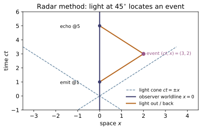
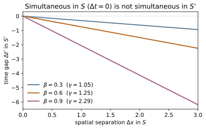
Example problems
You sit at the origin with a single clock. You send a radar pulse at clock-time t_send = 2 and receive its echo at t_echo = 8. Assign the reflection event a time and a distance using only this clock. Then show that if the reflector is a probe moving at constant β, the echo time is the send time stretched by exactly k². Answer: (t, x) = (5, 3), so x/t = 0.6; k² = t_echo/t_send = 4 ⇒ k = 2 ⇒ β = (4−1)/(4+1) = 0.6. Check: radar_coordinates(2, 8) → (5.0, 3.0); bondi_k(0.6)**2 → 4.0; beta_from_k(2.0) → 0.6.
Light goes out and back at the same speed, so the reflection sits at the temporal midpoint of emission and reception, a distance equal to half the round-trip light time:
so radar_coordinates(2, 8)$=(5,3)$ and $x/t=0.6$. For a probe at constant $\beta$ each leg is Doppler-stretched by one Bondi factor $k$, hence $t_\text{echo}/t_\text{send}=k^2$. With $\beta=0.6$, $k=\sqrt{1.6/0.4}=2$, so $k^2=4$ (bondi_k(0.6)**2) — the echo at $8=4\cdot2$ — and $\beta=(k^2-1)/(k^2+1)=3/5=0.6$ (beta_from_k(2.0)).
Two clocks a rest-distance L = 3 (light-seconds) apart along the line of motion are synchronized in their own frame. They fly past you at β = 0.8. Are they synchronized for you? Which reads ahead, and by how much? Answer: No. The front ("leading") clock lags the rear one by βL = 0.8·3 = 2.4 s; equivalently the rear (trailing) clock reads ahead by 2.4 s. Check: leading_clocks_lag(0.8, 3.0) → 2.4; reversing the motion, leading_clocks_lag(-0.8, 3.0) → -2.4.
"Synchronized in their own frame" means the two zero-settings are simultaneous there, $\Delta t'=0$ at rest-separation $\Delta x'=L$. A clock fixed in that frame reads, in the lab, $t'=\gamma(t-\beta x)$, so at one lab instant two clocks differ in reading by $\Delta t'=-\gamma\beta\,\Delta x_\text{lab}$. The lab sees their separation contracted, $\Delta x_\text{lab}=L/\gamma$, giving
with the front (larger $x$) clock reading behind — "leading clocks lag." So leading_clocks_lag(0.8, 3.0)$=2.4$; reversing the motion swaps which clock leads, leading_clocks_lag(-0.8, 3.0)$=-2.4$.
Two events are simultaneous in frame S (Δt = 0) and separated by Δx = 2. In a frame S′ moving at β = 0.6, are they still simultaneous? Which happens first? Answer: Δt′ = γ(Δt − βΔx) = γ(−βΔx) = −1.25·0.6·2 = −1.5 ≠ 0. Not simultaneous; the event at the larger x occurs earlier in S′ (negative Δt′). Check: simultaneity_breakdown(0.6, 0.0, 2.0) → -1.5; and it vanishes only in the trivial cases simultaneity_breakdown(0.0, 0.0, 2.0) → 0 and simultaneity_breakdown(0.6, 0.0, 0.0) → 0.
The time row of the boost gives $\Delta t'=\gamma(\Delta t-\beta\,\Delta x)$. Simultaneous in S means $\Delta t=0$, so with $\gamma=1/\sqrt{1-0.6^2}=1/0.8=1.25$,
They are not simultaneous in S′. Taking $\Delta x=x_2-x_1=2>0$, the negative $\Delta t'=t'_2-t'_1$ means the event at the larger $x$ happens earlier in S′. This is simultaneity_breakdown(0.6, 0.0, 2.0)$=-1.5$, which collapses to $0$ only in the trivial cases $\beta=0$ or $\Delta x=0$.
A transverse light clock has mirror gap D = 1. For β = 0.6, set up the right-triangle path of one half-tick (legs D and βτ, hypotenuse the light path τ), solve for τ, and read off the dilation factor τ/D. You must get γ without assuming it. Answer: (1−β²)τ² = D² ⇒ τ = D/√(1−0.36) = 1.25 ⇒ γ = 1.25. Check: light_clock_gamma(0.6) → 1.25, equal to 1/(1-0.62)0.5, and independent of the gap: light_clock_gamma(0.6, 3.7) is the same 1.25.
In one half-tick of lab-duration $\tau$ the clock slides horizontally by $\beta\tau$, while the light still covers a path of length $\tau$ (speed $c=1$, postulate 2) along the hypotenuse over the transverse gap $D$:
At $\beta=0.6$ this is $1/\sqrt{1-0.36}=1/0.8=1.25$, so the dilation factor is $\gamma=1.25$ — read off the triangle, never assumed. The ratio $\tau/D$ contains no $D$, so it is gap-independent: light_clock_gamma(0.6)$=1.25=1/(1-0.6^2)^{0.5}$, and light_clock_gamma(0.6, 3.7) gives the same $1.25$.
Maxwell builds a fixed c into electromagnetism; Galilean velocity addition would make c frame-dependent. Show that the relativistic machinery nonetheless reduces to Newton as β → 0: the Doppler factor k → 1, the dilation γ → 1, and the simultaneity offset → 0 (absolute time returns). What is the fractional error in γ at β = 10⁻³? Answer: γ − 1 ≈ ½β² = 5×10⁻⁷ and k ≈ 1 + β. Time dilation and length contraction are second order (β² — which is why Michelson–Morley needed such care), but the relativity of simultaneity is first order: the −βΔx term in Δt′ = γ(Δt − βΔx) is O(β). All of it vanishes as β → 0, returning Newton's absolute time. Check: light_clock_gamma(1e-3) → 1.0000005 (so γ−1 ≈ 5×10⁻⁷); bondi_k(1e-3) → 1.0010005…; the simultaneity term survives at first order — simultaneity_breakdown(1e-3, 2.0, 3.0) → 1.99700…, deviating from Δt = 2 by exactly βΔx = 0.003. Kill the separation and time becomes absolute: simultaneity_breakdown(1e-3, 2.0, 0.0) → 2.000001 ≈ Δt (only the O(β²) dilation left).
For small $\beta$, $\gamma=(1-\beta^2)^{-1/2}=1+\tfrac12\beta^2+\cdots$ and $k=\sqrt{\tfrac{1+\beta}{1-\beta}}=1+\beta+\cdots$, while the simultaneity offset $-\gamma\beta\,\Delta x=O(\beta)$. So dilation and contraction are second order in $\beta$, but the relativity of simultaneity is first order. At $\beta=10^{-3}$,
i.e. light_clock_gamma(1e-3)$=1.0000005$ and bondi_k(1e-3)$=1.0010005$. The first-order term survives: simultaneity_breakdown(1e-3, 2.0, 3.0)$=1.99700$, short of $\Delta t=2$ by exactly $\beta\,\Delta x=0.003$. Kill the separation and absolute time returns, simultaneity_breakdown(1e-3, 2.0, 0.0)$=2.000001\approx\Delta t$ (only the $O(\beta^2)$ dilation remaining).
A star moving at v at angle θ to the line of sight can appear to cross the sky faster than light. Explain why this is not a violation: the raw reception time (what you see) is not the event's coordinate time (what you observe) — they differ by the light-travel time, which is exactly what Einstein synchronization / the radar method removes. Check (the principle): radar_coordinates(t_send, t_echo) returns the observed (t, x) after subtracting light travel; the bare t_echo is only what the clock sees. Place an event at (t, x) = (5, 3) via t_send = t − x, t_echo = t + x: you see the echo at t_echo = 8, but observe the event at t = 5. This separation of "seen" from "observed" is the whole point of §12.1.2.
What you see is the photon's arrival time; what you observe (assign as the event's coordinate time) is that arrival minus the light-travel delay. For a source approaching at angle $\theta$, photons emitted later leave from nearer points, so their arrivals bunch up and the apparent transverse speed $\dfrac{v\sin\theta}{1-\beta\cos\theta}$ can exceed $c$ — but only the raw reception rate is superluminal, not the source. Einstein synchronization removes exactly this delay through the radar assignment
Placing an event at $(t,x)=(5,3)$ via $t_\text{send}=t-x=2$, $t_\text{echo}=t+x=8$: you see the echo at $t_\text{echo}=8$ but observe the event at radar_coordinates(2, 8)$=(5,3)$ — the seen/observed split of §12.1.2, with no real faster-than-light motion.
Run the worked code: cd RE/RE-02_postulates_special_relativity/code && python3 postulates.py
RE-03 — Lorentz Transformations
Relativity trunk · RE/RE-03_lorentz_transformations · open in the Teaching Network
The Lorentz boost as the linear map that keeps the speed of light invariant; the rapidity φ = artanh β that turns a boost into a hyperbolic rotation; Einstein velocity addition as rapidity addition; and the Lorentz group structure (closure, inverse, proper/orthochronous subgroup, parity & time reversal).
Key equations
Figures
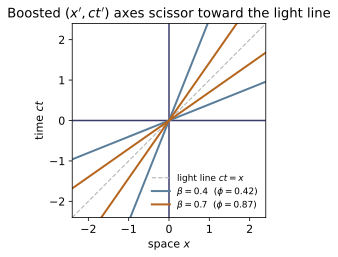
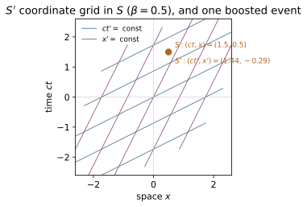
Example problems
Solve the Lorentz transformation Eqs. 12.18 for (ct, x) in terms of (ct', x'). Show the inverse is the same transformation with β → −β. Check: inverse(boost(0.6)) equals boost(-0.6), and compose(inverse(L), L) is the identity.
The boost is $ct'=\gamma(ct-\beta x)$, $x'=\gamma(x-\beta ct)$. Solve for the unprimed pair (eliminate, then use $\gamma^2(1-\beta^2)=1$):
This is the same transformation with $\beta\to-\beta$ — physically obvious, since S moves at $-\beta$ relative to S′. In matrix form $\Lambda(\beta)=\begin{pmatrix}\gamma&-\gamma\beta\\-\gamma\beta&\gamma\end{pmatrix}$ has $\det=\gamma^2(1-\beta^2)=1$, and its inverse just flips the off-diagonal sign: $\Lambda(\beta)^{-1}=\Lambda(-\beta)$. Hence inverse(boost(0.6)) equals boost(-0.6), and compose(inverse(L), L) is the identity.
Two ships approach you head-on, each at 0.9c in your frame. How fast does one move in the other's frame? Answer: (0.9+0.9)/(1+0.81) = 1.8/1.81 = 0.9945c, not 1.8c. Check: velocity_add(0.9, 0.9) → 0.99447…. Confirm velocity_add(0.9, 1.0) = 1.0.
Boost into one ship's rest frame; the other's velocity composes by
not $1.8c$ — the gap closes at $1.8c$ as a coordinate rate in your frame, but neither ship measures the other above $c$. The cap is automatic because $\tanh$ (hence the rule) saturates at $1$: feeding in a light ray, velocity_add(0.9, 1.0)$=(0.9+1)/(1+0.9)=1$ — light stays at light speed in every frame. So velocity_add(0.9, 0.9)$=0.99447$.
A Lorentz boost is a "rotation through an imaginary angle." Show that three collinear boosts β₁, β₂, β₃ compose to a single boost whose rapidity is φ₁+φ₂+φ₃. Check: compose(boost(b1), boost(b2), boost(b3)) equals boost(β) with β = beta_from_rapidity(rapidity(b1)+rapidity(b2)+rapidity(b3)).
In the $(ct,x)$ plane a boost is a hyperbolic rotation $\Lambda(\phi)=\begin{pmatrix}\cosh\phi&-\sinh\phi\\-\sinh\phi&\cosh\phi\end{pmatrix}$ with $\phi=\operatorname{artanh}\beta$. Rotations about the same axis add their angles, $\Lambda(\phi_1)\Lambda(\phi_2)\Lambda(\phi_3)=\Lambda(\phi_1+\phi_2+\phi_3)$, exactly like ordinary rotations. So three collinear boosts make a single boost of rapidity $\phi_1+\phi_2+\phi_3$, i.e.
For $\beta_i=(0.4,0.5,0.6)$ the rapidities sum to $1.6661$ and $\beta=\tanh(1.6661)=0.9310$. Thus compose(boost(b1), boost(b2), boost(b3)) equals boost(beta_from_rapidity(rapidity(b1)+rapidity(b2)+rapidity(b3))) — velocities don't add, rapidities do.
Write the boost matrix for β = 10⁻⁴ and show it differs from the Galilean transformation [[1,0],[−β,1]] (in (ct,x)) only at order β². Check: compare boost(1e-4) with the Galilean matrix; the γ−1 ≈ ½β² = 5×10⁻⁹ corrections sit on the diagonal.
The boost $\begin{pmatrix}\gamma&-\gamma\beta\\-\gamma\beta&\gamma\end{pmatrix}$ sits against the Galilean $\begin{pmatrix}1&0\\-\beta&1\end{pmatrix}$ in $(ct,x)$. For $\beta=10^{-4}$, $\gamma=(1-10^{-8})^{-1/2}=1+\tfrac12\beta^2+\cdots$, so the diagonal entries exceed the Galilean $1$ by
the corrections the Check locates on the diagonal. The space-row entry $-\gamma\beta=-\beta(1+\tfrac12\beta^2+\cdots)$ reproduces the Galilean $-\beta$ to relative order $\beta^2$, so $x'=\gamma(x-\beta ct)$ matches $x'=x-\beta ct$ to that order. The one genuinely new entry is the $-\gamma\beta$ in the time row — the $-\beta x$ (relativity-of-simultaneity) term that $t'=t$ drops — and it too vanishes as $\beta\to0$. So boost(1e-4) has diagonal $1.000000005$ and collapses to the Galilean map in the $c\to\infty$ limit.
Event A = (0, 0, 0, 0), event B = (ct, x, 0, 0) with ct = 5, x = 3. Compute s² between them, then boost by an arbitrary β and recompute. Answer: s² = −25 + 9 = −16 (timelike) in every frame. Check: interval2([5,3,0,0]) and interval2(apply(general_boost((0.4,-0.2,0.5)), [5,3,0,0])) agree; classify([5,3,0,0]) → "timelike".
With $\eta=\mathrm{diag}(-1,1,1,1)$ the squared interval between $A=(0,0,0,0)$ and $B=(5,3,0,0)$ is
so the separation is timelike. Every Lorentz transformation obeys $\Lambda^{\mathsf T}\eta\Lambda=\eta$, hence leaves $s^2=x^{\mathsf T}\eta x$ unchanged for all events: boosting $B$ by any $\boldsymbol\beta$ returns the same $-16$. Concretely interval2([5,3,0,0])$=-16$ equals interval2(apply(general_boost((0.4,-0.2,0.5)), [5,3,0,0])), and classify([5,3,0,0]) is "timelike".
A photon moves along (t, t, 0, 0) (speed 1). Boost to a frame moving at any β and show the photon's measured 3-speed is still 1. Check: out = apply(boost(0.8), [1,1,0,0]); out[1]/out[0] → 1.0, and classify(out) → "null". This is the postulate the whole module is built to honour.
The photon worldline $(t,t,0,0)$ has 3-speed $x/t=1$ and is null, $s^2=-t^2+t^2=0$. Boost at $\beta=0.8$ ($\gamma=1/\sqrt{1-0.64}=5/3$):
so the new 3-speed is $x'/t'=1$ again — both components shrink by the same Doppler factor, leaving the ratio fixed. Thus apply(boost(0.8), [1,1,0,0])$=[\tfrac13,\tfrac13,0,0]$ gives out[1]/out[0]$=1.0$ and classify(out) is "null": light moves at $c$ in every frame, the postulate the module is built to honour.
Run the worked code: cd RE/RE-03_lorentz_transformations/code && python3 lorentz.py
RE-04 — Time Dilation, Length Contraction & Simultaneity
Relativity trunk · RE/RE-04_time_dilation_length_contraction · open in the Teaching Network
Proper time and time dilation Δt = γΔτ (moving clocks run slow); length contraction L = L₀/γ (longitudinal only) and how it is operationally measured; the relativity of simultaneity (leading clocks lag βL₀); the realisation that these three are one boost read three ways; muon decay as the canonical experimental confirmation; and the pole-in-barn and twin paradoxes resolved. Closes with the Minkowski diagram picture: worldlines and the scissoring of boosted axes.
Key equations
Figures
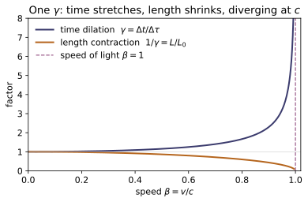
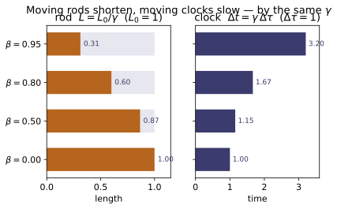
Example problems
Muons are created ~10 km up (d ≈ 33 light-μs) with rest-frame mean life τ₀ = 2.2 μs and travel down at β = 0.98. What fraction reaches the ground — (a) ignoring relativity, (b) with time dilation? Why is the muon's-frame story (a contracted atmosphere) the same answer? Answer: naive e^{−33/(0.98·2.2)} ≈ 2×10⁻⁷ (≈ none); relativistic e^{−33/(γ·0.98·2.2)} with γ = 5.03, ≈ 0.048 (~5%, as observed). Check: muon_fraction(2.2, 0.98, 33.0) → (0.0476, 2.25e-07); the ratio is ~10⁵.
The muon covers $d=33$ light-μs in lab time $d/\beta$ (with $c=1$), surviving a fraction $\exp(-t_\text{life}/\tau)$ where $t_\text{life}$ is read on its own clock. (a) Ignoring dilation its mean life stays $\tau_0$, so
(b) Time dilation stretches the lab mean life to $\gamma\tau_0$ with $\gamma=1/\sqrt{1-0.98^2}=5.025$, so
In the muon's frame nothing is dilated — the atmosphere is instead contracted to $d/\gamma$, giving the same exponent. This reproduces muon_fraction(2.2, 0.98, 33.0) → (0.0476, 2.25e-07), a ratio $\sim10^5$.
A rod has rest length L₀ = 1 m. It flies past at β = 0.6. (a) What length do you measure, and what must you do simultaneously to measure it? (b) Recover L₀ from your measurement. (c) Show the same γ governs the time dilation of a clock on the rod. Answer: L = L₀/γ = 0.8 m (mark both ends at one instant of your frame); L₀ = γL = 1 m; γ = 1.25 dilates a 1 s tick to 1.25 s. Check: length_contraction(1.0, 0.6) → 0.8; rest_length(0.8, 0.6) → 1.0; time_dilation(1.0, 0.6) → 1.25.
With $\beta=0.6$, $\gamma=1/\sqrt{1-\beta^2}=1/\sqrt{1-0.36}=1/0.8=1.25$. (a) The measured length is $L=L_0/\gamma=1/1.25=0.8$ m; to measure a moving rod you must mark both ends at the same instant of your frame ($\Delta t=0$), else it shifts between the markings. (b) Inverting, $L_0=\gamma L=1.25\cdot0.8=1.0$ m. (c) The same $\gamma$ dilates a clock riding the rod: a 1 s proper tick stretches to $\Delta t=\gamma\,\Delta\tau=1.25$ s — contraction and dilation are one boost read two ways ($\Delta x'=0$ vs $\Delta t=0$). This gives length_contraction(1.0, 0.6) → 0.8, rest_length(0.8, 0.6) → 1.0, and time_dilation(1.0, 0.6) → 1.25.
Two clocks L₀ = 10 (light-units) apart are synchronised in their own frame, which moves past you at β = 0.5. At one instant of your frame, which reads ahead and by how much? Answer: the trailing clock reads ahead; the leading one lags by βL₀ = 0.5·10 = 5. Check: leading_clocks_lag(10.0, 0.5) → 5.0; leading_clocks_lag(10.0, 0.0) → 0 (no motion ⇒ synchronised in every frame).
Synchronised in their own frame, both clocks read $t'=0$. Reading $t'=\gamma(t-\beta x)$ at one instant of your frame (fixed $t$) gives $\Delta t'=-\gamma\beta\,\Delta x$; with the contracted separation $\Delta x=L_0/\gamma$,
The leading clock (in front, along the motion) reads $\beta L_0=5$ behind, so the trailing clock reads ahead by $5$. At $\beta=0$ the offset vanishes — clocks synced in one frame stay synced in every frame. This matches leading_clocks_lag(10.0, 0.5) → 5.0 and leading_clocks_lag(10.0, 0.0) → 0.
A twin travels at β = 0.8 while the home clock logs T = 30 yr for the round trip. (a) How much does the traveller age? (b) Why is this not symmetric (each "sees the other slow"), and where does the missing time go? (c) What happens to the gap as β → 0? Answer: traveller ages T/γ = 30/1.667 = 18 yr (younger by 12). Only the traveller changes frames at the turnaround; her simultaneity slice sweeps across the home worldline, ageing the home twin by exactly the deficit. As β → 0 the gap → 0. Check: twin_ages(0.8, 30.0) → (30.0, 18.0); twin_ages(1e-4, 30.0) ≈ (30, 30).
With $\beta=0.8$, $\gamma=1/\sqrt{1-0.8^2}=1/\sqrt{0.36}=1/0.6=1.667$. (a) The home twin ages by the coordinate time $T=30$ yr; the traveller's clock runs slow the whole trip, logging proper time $T/\gamma=30/1.667=18$ yr — younger by $12$. (b) It is not symmetric because only the traveller changes inertial frame at the turnaround; there her line of simultaneity sweeps across the home worldline, ageing the home twin suddenly by exactly the missing $12$ yr (a $\beta L_0$-type jump). (c) As $\beta\to0$, $\gamma\to1$ and $T/\gamma\to T$, so the gap closes. Hence twin_ages(0.8, 30.0) → (30.0, 18.0) and twin_ages(1e-4, 30.0) ≈ (30, 30).
A pole of rest length L₀ = 10 runs at β = 0.6 through a barn of length L_barn = 10 with a door at each end. (a) Does it fit, with both doors shut at once? (b) The pole's frame says it can't possibly fit — reconcile. Answer: in the barn frame the pole contracts to L₀/γ = 8 ≤ 10, so yes — both doors shut simultaneously. In the pole frame the barn is only 8 long and the two door-shuts are not simultaneous (separated by γβL_barn = 7.5): the far door opens before the near one shuts. Same events, different "now." Check: pole_in_barn(10, 10, 0.6) → contracted_pole = 8.0, fits_in_barn_frame = True, door_gap_barn = 0.0, door_gap_pole = 7.5.
With $\beta=0.6$, $\gamma=1.25$. (a) In the barn frame the pole contracts to $L_0/\gamma=10/1.25=8\le10=L_\text{barn}$, so it momentarily fits and both doors can shut simultaneously ($\Delta t_\text{barn}=0$) with the pole inside. (b) In the pole frame the barn is contracted to $L_\text{barn}/\gamma=8<10$, so the pole cannot fit. Those same two door-shut events — simultaneous for the barn — are separated in the pole frame by
the far door shutting (and reopening) before the near one, so the pole is never enclosed. Same events, different "now": pole_in_barn(10, 10, 0.6) → contracted_pole = 8.0, fits_in_barn_frame = True, door_gap_barn = 0.0, door_gap_pole = 7.5.
On a Minkowski diagram (ct up, x across) draw the ct′- and x′-axes for a frame moving at β = 0.6. (a) What are their slopes? (b) Show they tilt toward the light line ct = x by equal angles. (c) What is that angle? Answer: ct′-axis is x = βct (slope 1/β = 1.667); x′-axis is ct = βx (slope β = 0.6). The slopes are reciprocals ⇒ mirror images about ct = x; each tilts by arctan β = 30.96°. Check: boosted_axes(0.6) → ([1.0, 0.6], [0.6, 1.0]); slopes ct/x are 1/0.6 and 0.6, product 1.0.
The $ct'$-axis is the worldline of the moving origin $x'=0$, i.e. $x=\beta ct$, with direction $(ct,x)=(1,\beta)$ and slope $ct/x=1/\beta=1/0.6=1.667$. The $x'$-axis is the simultaneity locus $ct'=0$, i.e. $ct=\beta x$, direction $(\beta,1)$, slope $ct/x=\beta=0.6$. (b) The slopes $1/\beta$ and $\beta$ are reciprocals (product $1$), so the axes are mirror images about the light line $ct=x$ — they scissor toward it through equal angles. (c) That common tilt is $\arctan\beta=\arctan0.6=30.96^\circ$. So boosted_axes(0.6) → ([1.0, 0.6], [0.6, 1.0]), whose slopes $ct/x$ are $1/0.6$ and $0.6$ with product $1.0$.
Run the worked code: cd RE/RE-04_time_dilation_length_contraction/code && python3 sr_effects.py
RE-05 — Minkowski Spacetime
Relativity trunk · RE/RE-05_minkowski_spacetime · open in the Teaching Network
The Minkowski metric η = diag(−1,+1,+1,+1); the invariant interval s² and the timelike / null / spacelike trichotomy; the light cone as the causal structure (future / past / elsewhere); proper time as Minkowski arc length and the reversed triangle inequality (twin paradox); the standard 4-vectors (position, velocity, momentum) and their invariants (U·U = −1, p·p = −m²).
Key equations
Figures
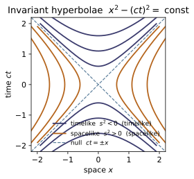
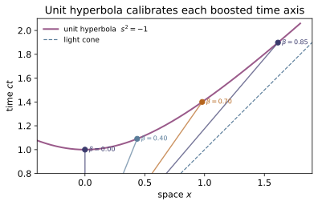
Example problems
For events A = (0,0,0,0) and B = (ct, x, 0, 0), decide timelike/null/spacelike for (a) ct=5, x=3; (b) ct=3, x=5; (c) ct=4, x=4. Answers: (a) timelike (s²=−16), (b) spacelike (s²=+16), (c) null. Check: classify([5,3,0,0]), classify([3,5,0,0]), classify([4,4,0,0]).
With $A$ at the origin, $B-A=(ct,x,0,0)$ and the invariant interval is
(a) $s^2=-5^2+3^2=-16<0$ — time wins, timelike: a sub-light worldline links the events. (b) $s^2=-3^2+5^2=+16>0$ — space wins, spacelike: no causal contact. (c) $s^2=-4^2+4^2=0$ — null, joined only by light. Because $s^2$ is Lorentz-invariant these labels hold in every frame, matching classify([5,3,0,0])→timelike, classify([3,5,0,0])→spacelike, classify([4,4,0,0])→null.
Show that if B is in A's future light cone, no Lorentz boost can make Δt' < 0. Then show that for a spacelike separation a boost CAN reverse the time order. Check: test_causal_order_is_frame_invariant_for_timelike does exactly this with random boosts.
A boost along $x$ transforms the time gap as $\Delta t'=\gamma(\Delta t-\beta\,\Delta x)$ with $|\beta|<1$. If $B$ is in $A$'s future the separation is timelike with $\Delta t>0$ and $|\Delta x|<\Delta t$, so
Thus $\Delta t'>0$ in every frame — cause precedes effect, always (the null boundary $|\Delta x|=\Delta t$ gives $\Delta t'=\gamma\Delta t(1\mp\beta)>0$ too). For a spacelike pair $|\Delta x|>|\Delta t|$, so any boost with $\Delta t/\Delta x<\beta<1$ makes $\Delta t-\beta\,\Delta x<0$ and reverses the order — exactly why no signal may travel spacelike. test_causal_order_is_frame_invariant_for_timelike shows both: the timelike $B$ keeps ${B'}^0>0$ under random boosts, while a spacelike event's $\Delta t$ flips.
Compute U·U for U = γ(1, 𝐯). Show it equals −1 (i.e. −c² with units), independent of v. Check: mdot(four_velocity([0.6,0.2,0.0]), four_velocity([0.6,0.2,0.0])) → −1.
With $U^\mu=\gamma(1,\mathbf v)$ and $\eta=\mathrm{diag}(-1,+1,+1,+1)$,
But $\gamma=1/\sqrt{1-|\mathbf v|^2}$ gives $\gamma^2(1-|\mathbf v|^2)=1$ identically, so $U\cdot U=-1$ (i.e. $-c^2$ in units with $c$) for any $\mathbf v$. The 4-velocity is a unit timelike vector by construction — differentiating $x^\mu$ by the invariant $\tau$ guarantees it. For $\mathbf v=(0.6,0.2,0)$ ($\gamma\approx1.291$) this is mdot(four_velocity([0.6,0.2,0.0]), four_velocity([0.6,0.2,0.0]))→$-1$, independent of speed.
A particle has mass m=2 and speed 0.6c along x. Find E and p, and verify E² − |𝐩|² = m². Answer: γ=1.25, E=2.5, p_x=1.5; 2.5² − 1.5² = 6.25 − 2.25 = 4 = 2². Check: four_momentum(2.0, [0.6,0,0]) → [2.5, 1.5, 0, 0]; invariant_mass → 2.0.
At $\beta=0.6$, $\gamma=1/\sqrt{1-0.36}=1/0.8=1.25$. The 4-momentum is $p^\mu=mU^\mu=(\gamma m,\ \gamma m\mathbf v)$, so
The mass shell then follows from $U\cdot U=-1$ (P3): $p\cdot p=m^2(U\cdot U)=-m^2$, i.e.
So $\sqrt{-p\cdot p}=2$ in every frame, reproducing four_momentum(2.0, [0.6,0,0])→[2.5, 1.5, 0, 0] and invariant_mass→2.0.
Twin A stays at rest from (0,0,0,0) to (10,0,0,0). Twin B flies out to (5, x, 0, 0) and back. Show B's proper time 2√(25 − x²) is always less than A's 10, and find the x that makes B return at half A's age. Answer: 2√(25−x²) = 5 ⇒ x = √(75)/2 ≈ 4.33 (β = x/5 ≈ 0.866, γ = 2). Check: proper_time([[0,0,0,0],[5,4.33,0,0],[10,0,0,0]]) ≈ 5.0.
Each leg of B's trip spans coordinate time $\Delta t=5$ and displacement $\Delta x=x$, so its proper time is the Minkowski arc length $\sqrt{(\Delta t)^2-(\Delta x)^2}=\sqrt{25-x^2}$. The two symmetric legs give
with equality only at $x=0$: the bent worldline is always shorter (the reversed triangle inequality), so the travelling twin returns younger. Setting $\tau_B=\tfrac12\tau_A=5$ gives $\sqrt{25-x^2}=2.5\Rightarrow x^2=18.75\Rightarrow x=\sqrt{75}/2\approx4.33$ (so $\beta=x/5\approx0.866$, $\gamma=2$). Then proper_time([[0,0,0,0],[5,4.33,0,0],[10,0,0,0]])$\approx5.0$, half of A's $10$.
Argue from the reversed triangle inequality that a free (inertial) particle follows the worldline of maximal proper time between two events. This "principle of maximal aging" is the seed of the geodesic principle in RE-12. Check: any bent worldline you feed proper_time returns less than the straight one.
Take any timelike worldline from $A$ to $B$ and insert an intermediate event $C$ off the straight line. The reversed triangle inequality (P5), applied leg by leg, gives
with equality only when $C$ lies on the straight worldline — every kink (an acceleration) strictly shortens the elapsed proper time. Iterating over all detours, the inertial path is the unique maximum of $\tau=\int d\tau$. This is the principle of maximal aging: a free particle extremizes its proper time, the seed of the geodesic principle in RE-12. Concretely, any bent worldline handed to proper_time returns less than the straight $A\to B$ value of $10$.
Run the worked code: cd RE/RE-05_minkowski_spacetime/code && python3 minkowski.py
RE-06 — Relativistic Dynamics
Relativity trunk · RE/RE-06_relativistic_dynamics · open in the Teaching Network
The 4-momentum p^μ = mU^μ = (E, 𝐩), E = γm, 𝐩 = γm𝐯; the mass shell p·p = −m² ⇔ E² = p² + m²; rest energy E₀ = m and kinetic energy T = (γ−1)m → ½mv²; conservation of total 4-momentum in collisions (energy + momentum as one law); the centre-of-momentum frame; system invariant mass; production thresholds; and Compton scattering.
Key equations
Figures
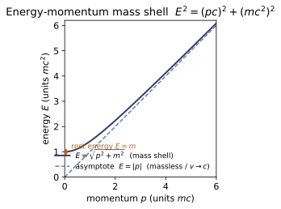
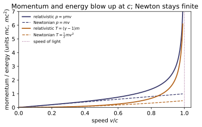
Example problems
A particle's kinetic energy equals n times its rest energy. Find its speed. Answer: γ = n+1, so v = c√(1 − 1/(n+1)²). For n=1: v = √3/2 c ≈ 0.866c. Check: solve kinetic_energy(1, [v,0,0]) = 1 ⇒ v ≈ 0.866.
Kinetic energy is $T=(\gamma-1)m$, and "$T=n$ times the rest energy $m$" means $(\gamma-1)m=nm$, hence
For $n=1$ the kinetic energy equals the rest energy, so $\gamma=2$ and $v=\sqrt{1-\tfrac14}=\sqrt3/2\approx0.866\,c$. (As $n\to\infty$, $\gamma\to\infty$ but $v\to c$: more kinetic energy buys ever less speed.) Solving kinetic_energy(1, [v,0,0]) = 1 indeed returns $v\approx0.866$, with $\gamma=2$.
Show E² − |𝐩|²c² = m²c⁴ for any speed, and that a massless particle has E=|𝐩|c. Check: for any (m,v), energy(m,v)² − Σ momentum(m,v)² = m²; and interval2(photon_four_momentum(E, n̂)) = 0.
With $E=\gamma m$ and $\mathbf p=\gamma m\mathbf v$,
since $\gamma^2(1-|\mathbf v|^2)=1$ at every speed; restoring units, $E^2-|\mathbf p|^2c^2=m^2c^4$. This is just $p\cdot p=-m^2$ in mostly-plus signs. Taking $m\to0$ at fixed $E$ forces $|\mathbf p|=E$: a massless particle is null ($p\cdot p=0$) and moves at $c$. Hence energy(m,v)² − Σ momentum(m,v)²$=m^2$ for any $(m,v)$, and interval2(photon_four_momentum(E, n̂))$=0$.
Two photons of energy E fly off back-to-back. What is the invariant mass of the pair? Could a single photon have done this? Answer: M = 2E ≠ 0 — a massive system from massless parts; a single photon has M=0, so a lone photon can't decay to mass (4-momentum forbids it). Check: system_invariant_mass([photon_four_momentum(E,[1,0,0]), photon_four_momentum(E,[-1,0,0])]) = 2E.
Each photon carries a null 4-momentum $p_{1,2}=(E,\pm E,0,0)$, so the pair's total is
The 3-momenta cancel while the energies add, so the system is massive ($M=2E$) though each part is massless — mass belongs to the total 4-momentum, not to individual particles. A single photon instead has $P\cdot P=-E^2+E^2=0$, so $M=0$, and it can never decay into massive products: 4-momentum conservation cannot turn one null vector into a timelike one. Thus system_invariant_mass([photon_four_momentum(E,[1,0,0]), photon_four_momentum(E,[-1,0,0])])$=2E$.
Two lumps of clay, each mass m at ±0.8c, collide and stick. Find the rest mass of the blob. Answer: M = 2γm = 2(1.667)m = 3.33m > 2m — the kinetic energy became mass. Check: inelastic_stick(1, [0.8,0,0], 1, [-0.8,0,0]) → (3.333, [0,0,0]).
At $\beta=0.8$, $\gamma=1/\sqrt{1-0.64}=1/0.6=5/3$. The lumps carry opposite momenta, so the total 4-momentum is purely temporal:
With no net 3-momentum the blob is born at rest, and its rest mass is the system invariant mass
The lost kinetic energy $2(\gamma-1)m$ did not disappear — it became rest mass ($E=mc^2$). This is inelastic_stick(1, [0.8,0,0], 1, [-0.8,0,0])→(3.333, [0,0,0]).
In p + p → p + p + p + p̄ (a proton beam on a stationary proton target), find the minimum beam kinetic energy. Answer: T = 6m_p c² ≈ 5.6 GeV (the 1955 Bevatron discovery energy). Check: threshold_kinetic_energy(1, 1, 4) = 6 (in units m_p=1).
The invariant $s=-P\cdot P$ is frame-independent. In the lab (beam energy $E_b$, momentum $p_b$, on a target $m_p$ at rest), using $E_b^2-p_b^2=m_p^2$,
At threshold the four final particles ($M=4m_p$) sit at rest in the centre-of-momentum frame, so $s=M^2=16m_p^2$. Equating,
The beam needs $6m_pc^2\approx5.6$ GeV of kinetic energy — the 1955 Bevatron antiproton threshold. So threshold_kinetic_energy(1, 1, 4)$=6$.
(a) A neutral pion at rest decays to two photons; show each has energy m_π c²/2. (b) A photon backscatters (θ=π) off an electron; find the wavelength shift. Answers: (a) E_γ = m_π/2 each, opposite directions. (b) Δλ = 2ℏ/m_e c (two Compton wavelengths) — the maximum possible shift. Check: compton_shift(math.pi, 1.0) = 2.0; compton_shift(0,1)=0.
(a) The pion at rest has $P^\mu=(m_\pi,\mathbf 0)$. Momentum conservation sends the two photons back-to-back with $|\mathbf p_1|=|\mathbf p_2|$, and since each is null, $E_i=|\mathbf p_i|$; energy conservation $E_1+E_2=m_\pi$ with $E_1=E_2$ then gives
(b) Compton scattering shifts the wavelength by $\Delta\lambda=\dfrac{\hbar}{m_ec}(1-\cos\theta)$; on backscatter $\theta=\pi$,
two Compton wavelengths — the maximum possible shift, versus zero in the forward direction. In natural units this is compton_shift(math.pi, 1.0)$=2.0$ against compton_shift(0,1)$=0$.
Run the worked code: cd RE/RE-06_relativistic_dynamics/code && python3 rel_dynamics.py
RE-07 — Relativistic Doppler Effect & Aberration
Relativity trunk · RE/RE-07_doppler_aberration · open in the Teaching Network
The 4-wavevector kᵘ = (ω, 𝐤), null for light (k·k = 0, |𝐤| = ω); the longitudinal, general angular, and transverse Doppler shifts; relativistic aberration cosθ' = (cosθ−β)/(1−β cosθ), the aberration of starlight, and the headlight/beaming cone arccos β; and a brief, conceptual note on Penrose–Terrell rotation (a fast sphere still looks circular).
Key equations
Example problems
A galaxy recedes from us at β = 0.6. By what factor is an emission line's frequency shifted, and by what factor does its wavelength stretch? Answer: f_obs/f_src = √((1−0.6)/(1+0.6)) = √(0.25) = 0.5 — the frequency halves, the wavelength doubles. The blueshift for the time-reversed approach is the Bondi k = √(1.6/0.4) = 2, and 0.5 = 1/k. Check: doppler_longitudinal(0.6) → 0.5, bondi_k(0.6) → 2.0, product = 1.
For a source receding along the line of sight the longitudinal factor is
The frequency halves, and since $\lambda\propto1/f$ the wavelength doubles. The approaching (time-reversed) case is the reciprocal — the Bondi factor $k=\sqrt{(1+\beta)/(1-\beta)}=\sqrt{1.6/0.4}=2$ — so the receding shift is exactly $1/k=0.5$. Hence doppler_longitudinal(0.6)→0.5, bondi_k(0.6)→2.0, and their product is 1.
A source flies past at β = 0.5; you record its frequency at the instant it is exactly abeam (θ = 90°, zero radial velocity). Classical theory predicts no shift — what does relativity predict? Answer: a redshift f_obs/f_src = 1/γ = √(1−0.25) = 0.8660, purely the moving clock running slow. This is the Ives–Stilwell signature of SR. Check: doppler_transverse(0.5) → 0.86603, equal to doppler_general(0.5, π/2).
At the abeam instant ($\theta=90^\circ$) there is no line-of-sight velocity, so classical theory predicts no shift. The relativistic factor at $\theta=\pi/2$ retains only the time-dilation piece:
It is a pure redshift: the moving source's clock runs slow by $\gamma$, so its frequency arrives lowered even with zero radial motion. This transverse effect (Ives–Stilwell, 1938) has no classical analogue. Numerically doppler_transverse(0.5)→0.86603, equal to doppler_general(0.5, π/2).
A ray of frequency ω = 1 heads off at θ = 60° (observer frame). Boost to the frame moving at β = 0.6 along +x. Find the new frequency ratio and the new direction two ways: from the Doppler/aberration formulas, and by transforming the 4-wavevector kᵘ = (ω, ω cosθ, ω sinθ, 0). Answer: γ = 1.25; Doppler f_obs/f_src = 1/(1.25·(1−0.6·0.5)) = 1/0.875 = 1.142857; aberration cosθ' = (0.5−0.6)/(0.7) = −1/7 ⇒ θ' = 98.21°. The boosted kᵘ reproduces both, and stays null. Check: k = four_wavevector(1, math.radians(60)); kp = transform_wavevector(0.6, k); then wavevector_frequency(k)/wavevector_frequency(kp) → 1.142857 = doppler_general(0.6, 60°) and math.degrees(wavevector_angle(kp)) → 98.2132 = math.degrees(aberration(60°, 0.6)), with _mink2(kp) ≈ 0.
With $\beta=0.6$, $\gamma=1/\sqrt{1-0.36}=1.25$ and $\cos60^\circ=\tfrac12$. The angular Doppler factor is
and the aberration angle obeys
Boosting the null wavevector $k^\mu=(1,\tfrac12,\tfrac{\sqrt3}{2},0)$ with the RE-03 $\Lambda(0.6)$ reproduces both — Doppler is its time component, aberration its spatial direction — and keeps $k'\cdot k'=0$. So wavevector_frequency(k)/wavevector_frequency(kp)→1.142857, equal to doppler_general(0.6, 60°), and math.degrees(wavevector_angle(kp))→98.2132, the aberration angle, with _mink2(kp)$\approx0$.
Earth orbits the Sun at v ≈ 29.8 km/s, so β ≈ 9.93×10⁻⁵. A star seen broadside (θ = 90°) is displaced by aberration. Estimate the annual swing. Answer: for small β, θ' − 90° ≈ β rad = 9.93×10⁻⁵ rad ≈ 20.5″ — Bradley's 1727 "constant of aberration." The apparent position shifts toward the apex (Earth's direction of motion); over a year it traces a small ellipse. (Note: θ here is the ray's propagation angle; the line of sight to the star is the opposite direction, which is why the apparent star moves toward, not away from, the apex.) Check: math.degrees(aberration(math.pi/2, 9.93e-5) - math.pi/2)*3600 → 20.49 (arcseconds).
For a broadside ray $\theta=90^\circ$ ($\cos\theta=0$) the aberration law gives
For tiny $\beta$, $\arcsin\beta\approx\beta$, so the swing is $\theta'-\tfrac{\pi}{2}\approx\beta=9.93\times10^{-5}$ rad. Converting, $\beta\cdot206265\approx20.5$ arcsec — Bradley's 1727 constant of aberration. The apparent star shifts toward the apex (Earth's instantaneous direction of motion), tracing a small ellipse over the year. Indeed math.degrees(aberration(math.pi/2, 9.93e-5) - math.pi/2)*3600→20.49 arcseconds.
A source radiates isotropically in its rest frame and moves at β = 0.99 in the lab. Inside what forward half-angle does half of its light emerge? Answer: the rest-frame transverse ray aberrates to cosθ_c = β, so θ_c = arccos(0.99) = 8.11° ≈ √(2(1−β)) = 0.141 rad. Half the photons fall in this tight forward cone — the beaming that makes relativistic jets look one-sided. Check: headlight_halfangle(0.99) → 0.14155 rad (8.110°), and it equals aberration(math.pi/2, -0.99); cos(that) → 0.99.
A source isotropic in its rest frame emits half its photons into the rest-frame forward hemisphere ($\theta_{\rm rest}<90^\circ$). Its boundary ray $\theta_{\rm rest}=90^\circ$ aberrates (rest$\to$lab is a $-\beta$ boost) to the lab cone half-angle $\theta_c$ with $\cos\theta_c=\beta$:
As $\beta\to1$ this collapses: $\theta_c\approx\sqrt{2(1-\beta)}=\sqrt{0.02}=0.141$ rad, a forward pencil of order $1/\gamma$. Half the light is beamed into this tight cone — the relativistic headlight effect that makes jets look one-sided. So headlight_halfangle(0.99)→0.14155 rad ($8.110^\circ$), equal to aberration(math.pi/2, -0.99), with $\cos\theta_c\to0.99$.
A sphere flies past at β close to 1. Length contraction says it is squashed to an ellipsoid along the motion. Yet Penrose and Terrell showed a photograph still shows a circular outline. Resolve the apparent contradiction. Answer: a camera records photons arriving simultaneously, which left the sphere at different times; combined with aberration, the far side becomes visible and the net effect is an apparent rotation, not a squash — the circular silhouette is preserved. Length contraction is what simultaneous rulers measure, not what one lens photographs; both are correct answers to different questions. The outline-ray directions transform by the very same cosθ' = (cosθ−β)/(1−β cosθ) used throughout this module. Check: conceptual — no code. See notes.md §6; contrast with the measured contraction in ~RE-04.
Length contraction and a photograph answer different questions. Contraction is what simultaneous lab rulers measure: the sphere's extent along $\mathbf v$ is genuinely $1/\gamma$ shorter. A camera instead records photons that arrive together but left at different times — light from the receding far side departed earlier, when the sphere was elsewhere, so that side becomes visible. Combined with aberration of the outline rays — which transform by the same $\cos\theta'=(\cos\theta-\beta)/(1-\beta\cos\theta)$ used throughout this module — the net optical effect is an apparent rotation (Penrose–Terrell, 1959), not a squash, and a sphere's silhouette stays exactly circular. No contradiction: the measured contraction (~RE-04) and the photographed rotation are both right, answering the distinct questions "what do simultaneous rulers read?" versus "what does one lens capture?". Conceptual — no code; see notes.md §6.
Run the worked code: cd RE/RE-07_doppler_aberration/code && python3 doppler_aberration.py
RE-08 — Covariant Formulation of Special Relativity
Relativity trunk · RE/RE-08_covariant_formulation · open in the Teaching Network
The transformation laws by rank — scalar (invariant), contravariant V^μ, covariant V_μ (the inverse-transpose law), rank-2 T^{μν}; raising/lowering with η; Lorentz invariants from full contraction (V^μV_μ, the trace T^μ_μ, S_{μν}T^{μν}); the symmetric/antisymmetric split and its invariance under boosts; the invariant tensors η, δ^μ_ν; the naturally covariant 4-gradient ∂_μ and the scalar d'Alembertian □ = ∂^μ∂_μ = −∂_t² + ∇².
Key equations
Example problems
V^μW_μ is invariantGriffiths 4e, §12.1.4, p.525Let V^μ = (2, 5, −1, 3) (contravariant) and W_μ = (1, 0, 2, −2) (covariant). Compute V^μW_μ, then boost V with the contravariant law and W with the covariant (inverse-transpose) law and recompute. Explain why the two agree. Answer: V^μW_μ = 2 − 0 − 2 − 6 = −6, unchanged by the boost, because Λ^μ_ν (Λ⁻¹)^ρ_μ = δ^ρ_ν collapses the two transformations. Check: sum(V[i]W[i] …) vs sum(transform_vector(L,V)[i]transform_covector(L,W)[i] …) → both −6.
Direct evaluation gives $V^\mu W_\mu = 2\cdot1 + 5\cdot0 + (-1)\cdot2 + 3\cdot(-2) = -6$. Under a boost the contravariant $V$ gains a factor $\Lambda$ and the covariant $W$ the inverse-transpose, and the two collapse:
The covariant law is defined as the inverse-transpose precisely so this product is frame-independent - the $\Lambda$ and $\Lambda^{-1}$ annihilate into $\delta^\rho_\nu$. Hence the boosted contraction returns the same value, matching sum(transform_vector(L,V)[i]*transform_covector(L,W)[i]) $=-6$.
Show Λ^μ_α Λ^ν_β η^{αβ} = η^{μν} for every Lorentz Λ, i.e. ΛηΛᵀ = η. Start from the defining property ΛᵀηΛ = η and use η² = I. Answer: From ΛᵀηΛ = η, left-multiply by η and right-multiply by Λ⁻¹: ηΛᵀη = Λ⁻¹, hence ΛηΛᵀη = I, so ΛηΛᵀ = η⁻¹ = η. Check: transform_tensor2(L, ETA) equals ETA to machine precision.
Start from the defining Lorentz condition $\Lambda^{\mathsf T}\eta\Lambda=\eta$. Left-multiply by $\eta$ and use $\eta^2=I$, then right-multiply by $\Lambda^{-1}$:
Now form the rank-2 transform of $\eta$ and insert $\eta\eta=I$ at the right:
In index form $\Lambda^\mu{}_\alpha\Lambda^\nu{}_\beta\,\eta^{\alpha\beta}=\eta^{\mu\nu}$: the metric has the same components in every frame. This is exactly transform_tensor2(L, ETA) equalling ETA to machine precision (the demo reports a maximum difference $\sim 2\times10^{-16}$).
Prove: if T^{μν} is symmetric then so is T̄^{μν} = Λ^μ_α Λ^ν_β T^{αβ} (and the same for antisymmetric). Answer: T̄^{νμ} = Λ^ν_α Λ^μ_β T^{αβ} = Λ^ν_β Λ^μ_α T^{βα} (relabel α↔β) = Λ^μ_α Λ^ν_β T^{αβ} = T̄^{μν} using T^{βα}=T^{αβ}. The minus sign carries through for the antisymmetric case. So symmetry type is a Lorentz-invariant label — which is why decomposing T = T^{(μν)} + T^{[μν]} is frame-independent. Check: transform_tensor2(L, symmetric_part(T)) is symmetric; transform_tensor2(L, antisymmetric_part(T)) is antisymmetric.
Apply the rank-2 law to $\bar T^{\nu\mu}$ and rename the dummy indices $\alpha\leftrightarrow\beta$:
If $T^{\beta\alpha}=+T^{\alpha\beta}$ this equals $+\bar T^{\mu\nu}$; if $T^{\beta\alpha}=-T^{\alpha\beta}$ it equals $-\bar T^{\mu\nu}$. So a boost sends symmetric $\to$ symmetric and antisymmetric $\to$ antisymmetric - symmetry type is a Lorentz-invariant label, which is why the split $T=T^{(\mu\nu)}+T^{[\mu\nu]}$ is frame-independent. This is what transform_tensor2(L, symmetric_part(T)) (stays symmetric) and transform_tensor2(L, antisymmetric_part(T)) (stays antisymmetric) confirm.
For T^{μν} formed from T^{(μν)} (symmetric) and T^{[μν]} (antisymmetric): (a) show the cross-contraction S_{μν}A^{μν} vanishes for symmetric S, antisymmetric A; (b) show the trace T^μ_μ = η_{μν}T^{μν} is a Lorentz scalar. Answer: (a) S_{μν}A^{μν} = S_{νμ}A^{μν} = −S_{νμ}A^{νμ} = −S_{μν}A^{μν} (relabel) ⇒ it equals its own negative ⇒ 0. (b) T^μ_μ has every index tied off, so it transforms as a scalar; explicitly η_{μν}T̄^{μν} = η_{μν}Λ^μ_αΛ^ν_βT^{αβ} = η_{αβ}T^{αβ} by P2. Check: double_contract(symmetric_part(T), antisymmetric_part(T)) → 0; trace(transform_tensor2(L, T)) equals trace(T).
(a) Rename $\mu\leftrightarrow\nu$ and use the two symmetries $S_{\nu\mu}=S_{\mu\nu}$, $A^{\nu\mu}=-A^{\mu\nu}$:
so the cross-contraction equals its own negative and must vanish. (b) The trace ties off both indices with the invariant metric, so by P2 ($\eta_{\mu\nu}\Lambda^\mu{}_\alpha\Lambda^\nu{}_\beta=\eta_{\alpha\beta}$):
a Lorentz scalar. These confirm double_contract(symmetric_part(T), antisymmetric_part(T)) $=0$ and trace(transform_tensor2(L, T)) $=$ trace(T) (the demo holds it at $30.0$ before and after the boost).
(a) Compute ∂_μ(x·x) and show it equals 2x_μ (a lower-index 4-vector, with ∂_0 = −2x^0). (b) Evaluate the d'Alembertian □ = −∂_t² + ∇² on f = (x^0)², on f = (x^1)², and on f = x·x. Answer: (a) ∂_ν(η_{αβ}x^αx^β) = 2η_{νβ}x^β = 2x_ν. (b) □(x^0)² = −2, □(x^1)² = +2, and □(x·x) = −(−2)+2+2+2 = 8 (= 2η^{μν}η_{μν} = 2·4). Check: four_gradient(lambda x: mdot(x,x), x) ≈ [2c for c in lower(x)]; dalembertian(...) returns −2, +2, 8.
(a) With $x\cdot x=\eta_{\alpha\beta}x^\alpha x^\beta$ and $\partial x^\alpha/\partial x^\nu=\delta^\alpha_\nu$, the product rule gives
a lower-index vector whose time slot carries the metric's sign, $\partial_0(x\cdot x)=2x_0=-2x^0$. (b) For a single quadratic only the matching second derivative survives, $\Box(x^0)^2=\eta^{00}\cdot2=-2$ and $\Box(x^i)^2=\eta^{ii}\cdot2=+2$. Since $x\cdot x$ carries a minus on its time term, $\Box(x\cdot x)=-(-2)+2+2+2=8=2\,\eta^{\mu\nu}\eta_{\mu\nu}$. These match four_gradient(...) $=[-2,4,-2,1]=2\cdot$lower(x) and dalembertian(...) returning $-2,\,+2,\,8$.
A plane wave is f(x) = cos(k_μx^μ) with constant wavevector k. Show □f = −(k·k) f, so f solves the homogeneous wave equation □f = 0 iff k is null (k·k = 0). Take k^μ = (1, 1, 0, 0). Answer: ∂_μf = −sin(k·x)k_μ, ∂_ν∂_μf = −cos(k·x)k_μk_ν, so □f = η^{μν}∂_μ∂_νf = −(η^{μν}k_μk_ν)f = −(k·k)f. For k=(1,1,0,0), k·k = −1+1 = 0, hence □f = 0 — the seed of □A^μ = −μ₀J^μ (covariant Maxwell, EM-18) and of the dispersion relation E² = 𝐩² for massless quanta. Check: mdot([1,1,0,0],[1,1,0,0]) → 0; dalembertian(lambda x: cos(klow·x), x) ≈ 0.
With $k$ constant, each derivative of $f=\cos(k_\mu x^\mu)$ brings down a factor of $k$:
Contracting with $\eta^{\mu\nu}$ to build the d'Alembertian,
so $\Box f=0$ iff $k\cdot k=0$ (a null wavevector). For $k^\mu=(1,1,0,0)$, $k\cdot k=-1+1=0$, hence $\Box f=0$ - the seed of $\Box A^\mu=-\mu_0 J^\mu$ (EM-18) and of $E^2=\mathbf p^2$ for massless quanta. This matches mdot([1,1,0,0],[1,1,0,0]) $=0$ and dalembertian $\approx 0$.
Run the worked code: cd RE/RE-08_covariant_formulation/code && python3 covariant_sr.py
RE-09 — Tensor Calculus on Manifolds
Relativity trunk · RE/RE-09_tensor_calculus_manifolds · open in the Teaching Network
Key equations
Example problems
From Γ^k_{ij} = ½ g^{kl}(∂_i g_{jl}+∂_j g_{il}−∂_l g_{ij}) and g=diag(1,sin²θ), the only nonzero derivative is ∂_θ g_{φφ}=2\sinθ\cosθ. Show Γ^θ_{φφ}=−\sinθ\cosθ, Γ^φ_{θφ}=Γ^φ_{φθ}=\cotθ, and that all other components vanish. Answer: at θ=1.0: Γ^θ_{φφ}=−\sin1\cos1=−0.4546, Γ^φ_{θφ}=\cot1=0.6421. Check: christoffel(diffgeo.sphere_metric(1.0),[1.0,0.4]) → Gam[0][1][1]≈−0.4546, Gam[1][0][1]≈0.6421.
The inverse metric is $g^{\theta\theta}=1$, $g^{\phi\phi}=1/\sin^2\theta$, and the only nonzero derivative is $\partial_\theta g_{\phi\phi}=2\sin\theta\cos\theta$. Substituting into $\Gamma^k_{ij}=\tfrac12 g^{kl}(\partial_i g_{jl}+\partial_j g_{il}-\partial_l g_{ij})$,
The lower pair is symmetric so $\Gamma^\phi_{\phi\theta}=\Gamma^\phi_{\theta\phi}$, and any component needing a derivative other than $\partial_\theta g_{\phi\phi}$ is zero. At $\theta=1$: $-\sin1\cos1=-0.4546$ and $\cot1=0.6421$, matching christoffel(...) with Gam[0][1][1] $\approx-0.4546$ and Gam[1][0][1] $\approx0.6421$.
The plane in polar coordinates has g=diag(1,r²) — flat, yet its Christoffels are not zero. Compute them and explain why nonzero Γ does not mean curvature. Answer: Γ^r_{φφ}=−r, Γ^φ_{rφ}=Γ^φ_{φr}=1/r, others 0. The Γ encode how the polar basis vectors (\hat r,\hatφ) rotate as you move — a property of the coordinates, not the space. Curvature is the connection's derivative (Riemann), which is zero here (RE-11). Check: christoffel(diffgeo.plane_polar_metric(), [1.5,0.0]) → Gam[0][1][1]≈−1.5, Gam[1][0][1]≈0.667.
With $g_{rr}=1$, $g_{\phi\phi}=r^2$, the lone nonzero derivative is $\partial_r g_{\phi\phi}=2r$ and $g^{\phi\phi}=1/r^2$. The same Christoffel formula gives
all others zero. They are nonzero even though the plane is flat: they merely record how the polar basis $(\hat r,\hat\phi)$ swings as you move - a property of the coordinates, not the space. Genuine curvature is the derivative of $\Gamma$ (the Riemann tensor), which vanishes here (RE-11). At $r=1.5$: $\Gamma^r_{\phi\phi}=-1.5$ and $\Gamma^\phi_{r\phi}=1/1.5=0.667$, matching christoffel(...) $\to$ Gam[0][1][1] $\approx-1.5$, Gam[1][0][1] $\approx0.667$.
Show that the Levi-Civita connection satisfies ∇_i g_{jk}=0 identically, by expanding ∇_i g_{jk}=∂_i g_{jk}−Γ^l_{ij}g_{lk}−Γ^l_{ik}g_{jl} and substituting the Christoffel formula. Why does this guarantee that parallel transport preserves lengths and angles, and that ∇ commutes with raising/lowering indices? Answer: the three terms cancel term by term; metric-compatibility means d/dλ⟨V,W⟩=⟨∇V,W⟩+⟨V,∇W⟩=0 along a transport, so inner products (hence lengths and angles) are invariant. Check: metric_compatibility(diffgeo.sphere_metric(1.0), [1.0,0.4]) and …(diffgeo.plane_polar_metric(),[1.5,0.0]) → both ≈ 0.
Lower the connection index, $\Gamma_{kij}\equiv g_{kl}\Gamma^l_{ij}=\tfrac12(\partial_i g_{jk}+\partial_j g_{ik}-\partial_k g_{ij})$, so that
Adding the two lowered symbols, the cross terms cancel and
so $\nabla_i g_{jk}=0$ identically. Metric-compatibility means $\tfrac{d}{d\lambda}\langle V,W\rangle=\langle\nabla V,W\rangle+\langle V,\nabla W\rangle=0$ along a transport, so lengths and angles are preserved and $\nabla$ commutes with raising/lowering. Confirmed: metric_compatibility(...) on the sphere and on the plane-polar metric both return $\approx0$ (the demo gives $0$ to machine precision).
A geodesic has zero covariant acceleration ẍ^k=−Γ^k_{ij}ẋ^iẋ^j. For a curve at fixed colatitude θ_0 traversed in φ at rate \dotφ=ω (so ẋ=(0,ω)), show ẍ^θ=\sinθ_0\cosθ_0\,ω². Deduce that the equator (θ_0=π/2) is a geodesic but every other latitude is not — you must accelerate ("steer") to hold a latitude. Answer: ẍ^θ=−Γ^θ_{φφ}ω²=\sinθ_0\cosθ_0\,ω², which is 0 only at θ_0=π/2 (or the poles). Check: geodesic_acceleration(g,[3.14159/2,0],[0,1])≈[0,0] (equator); geodesic_acceleration(g,[1.0,0],[0,1])≈[0.4546,0] (latitude — nonzero).
For a curve at fixed $\theta=\theta_0$ swept in $\phi$ at rate $\omega$, the tangent is $\dot x=(0,\omega)$, so in $\ddot x^k=-\Gamma^k_{ij}\dot x^i\dot x^j$ only the $(\phi,\phi)$ term survives:
while $\ddot x^\phi=-\Gamma^\phi_{\phi\phi}\omega^2=0$. This vanishes only when $\sin\theta_0\cos\theta_0=0$, i.e. at the equator $\theta_0=\pi/2$ (or the poles): the equator is a geodesic, every other latitude is not - you must supply $\ddot x^\theta$ ("steer") to hold it. Confirmed: geodesic_acceleration(g,[3.14159/2,0],[0,1]) $\approx[0,0]$ versus geodesic_acceleration(g,[1.0,0],[0,1]) $\approx[0.4546,0]$.
Parallel-transport a vector around the closed lat–long rectangle [θ_0,θ_0+Δθ]×[φ_0,φ_0+Δφ] on the unit sphere. It returns rotated by an angle equal to the enclosed area \iint\sinθ\,dθ\,dφ=(\cosθ_0−\cos(θ_0{+}Δθ))Δφ (because ∫K\,dA with K=1). For θ_0=1.0, Δθ=Δφ=0.3 compute the predicted angle. Answer: (\cos1.0−\cos1.3)·0.3 = (0.5403−0.2675)·0.3 ≈ 0.0818 rad. Check: transport [1,0] round [[1,0],[1,0.3],[1.3,0.3],[1.3,0],[1,0]] with parallel_transport(g,[1.0,0.0],loop,steps=400); the rotation of the returned vector (measured in the local orthonormal frame) is ≈0.0818. The sign flips if you traverse the loop the other way; a zero-area (out-and-back) path leaves the vector unchanged.
By Gauss-Bonnet the holonomy from transport round the loop equals the curvature integrated over the enclosed cap, $\Delta\alpha=\iint K\,dA$; on the unit sphere $K=1$, so it is simply the area:
For $\theta_0=1.0$, $\Delta\theta=\Delta\phi=0.3$ this is $(\cos1.0-\cos1.3)\cdot0.3=(0.5403-0.2675)\cdot0.3\approx0.0818$ rad. Transporting [1,0] around the rectangle and reading the rotation in the orthonormal frame gives $\approx0.0818$ (the demo measures $0.0818$); reversing the loop flips the sign, and a zero-area out-and-back path leaves the vector unchanged.
The Γ^k_{ij} are not tensor components — their transformation law has an inhomogeneous ∂²x'/∂x∂x piece. Argue that one can therefore always choose coordinates (geodesic normal / locally inertial) in which Γ=0 at a single chosen point, while what cannot be removed is ∂Γ (the Riemann tensor). State the physical content. Answer: a free-falling observer can pick coordinates in which the connection vanishes at their location — gravity is locally transformed away — but tidal effects (∂Γ ∼ Riemann) remain. This is the equivalence principle: gravitation is the curvature of spacetime, not a force on a fixed background. Check (conceptual): metric_compatibility and the flat-η tests show that when g is constant every Γ=0 — the local-inertial-frame limit at every point at once.
Under a coordinate change the connection picks up an inhomogeneous piece,
whose second term is not tensorial - so $\Gamma$ is not a tensor. At any chosen point $p$ one can pick coordinates (geodesic-normal / locally inertial) that make that term cancel $\Gamma(p)$, giving $\Gamma'^k_{ij}(p)=0$. What cannot be removed is $\partial\Gamma$ - the Riemann tensor, which transforms homogeneously. Physically a free-faller transforms gravity away at their location (the connection) but never the tidal field (the curvature): gravity is curvature, not a force on a fixed background. The flat-$\eta$ tests show the limiting case - when $g$ is constant every $\Gamma=0$, the locally inertial frame realised everywhere at once.
Run the worked code: cd RE/RE-09_tensor_calculus_manifolds/code && python3 covariant_derivative.py
RE-10 — The Equivalence Principle
Relativity trunk · RE/RE-10_equivalence_principle · open in the Teaching Network
The weak EP (universality of free fall, m_inertial = m_grav, Eötvös tests); Einstein's EP ("the happiest thought" — a uniformly accelerated frame is locally a uniform gravitational field, and free fall is locally inertial); gravitational redshift and time dilation from the EP alone; the accelerating-elevator light- bending argument (and its famous factor-of-two shortfall); Rindler observers and horizons; and the tidal field as the irreducible, non-removable remainder that is spacetime curvature.
Key equations
Example problems
A 14.4 keV γ-ray climbs the h = 22.5 m Jefferson tower. Using only the equivalence principle, predict the fractional frequency shift Δf/f = −gh/c² and its sign. Why is the result negative ("red")? Answer: −9.80665·22.5/(2.998×10⁸)² = −2.45×10⁻¹⁵; negative because the photon climbs out, spending energy against the (effective) field. Check: pound_rebka() → 2.455e-15; redshift_uniform_field(9.80665, 22.5) → -2.455e-15.
By the equivalence principle the climbing photon is equivalent to one received by an observer accelerating upward at $g$; in the flight time $t=h/c$ the receiver gains speed $v=gt=gh/c$ away from the source, so the first-order Doppler shift is
With $g=9.80665\ \text{m/s}^2$ and $h=22.5\ \text{m}$, $\Delta f/f=-9.80665\cdot22.5/(2.998\times10^8)^2=-2.45\times10^{-15}$. It is negative - a redshift - because the photon climbs out, spending energy against the effective field and dropping in frequency. This matches pound_rebka() $=2.455\times10^{-15}$ (magnitude) and redshift_uniform_field(9.80665, 22.5) $=-2.455\times10^{-15}$.
A rocket accelerates at a = g. Show that the floor→ceiling redshift over height h equals the redshift of a photon rising h in a uniform field g — i.e. no experiment in the sealed cabin distinguishes the two. Check: for any a, h, accelerated_frame_redshift(a, h) == redshift_uniform_field(a, h) (test_equivalence_accelerated_equals_field).
In the rocket, light emitted at the floor reaches the ceiling height $h$ after $t=h/c$; in that interval the ceiling has gained speed $v=at=ah/c$ away from the emission event, so the Doppler shift is $\Delta f/f=-v/c=-ah/c^2$ - this is accelerated_frame_redshift(a,h). A photon rising $h$ in a uniform field $g$ climbs a potential $\Delta\Phi=gh$, giving $\Delta f/f=-\Delta\Phi/c^2=-gh/c^2$ - this is redshift_uniform_field(g,h). Setting $g=a$,
The two are numerically identical for every $a,h$, so no measurement of the photon shift inside the sealed cabin can distinguish acceleration $a$ from a field $g=a$ - the equivalence principle. Confirmed by accelerated_frame_redshift(a, h) $==$ redshift_uniform_field(a, h) (test_equivalence_accelerated_equals_field).
A clock sits at potential Φ_lower, another at Φ_upper > Φ_lower. Show that the fractional rate by which the lower clock falls behind equals the redshift of a photon sent from the lower to the upper clock. Answer: both equal −(Φ_upper−Φ_lower)/c². Check: grav_time_dilation(Φ_lo, Φ_up) − 1 == grav_redshift(Φ_up − Φ_lo) (test_redshift_timedilation_consistency). Apply it to GPS: ground clocks run slow, so the satellite clock gains time.
An ideal clock at potential $\Phi$ ticks at proper rate $d\tau/dt\approx1+\Phi/c^2$ (weak field). The fractional amount by which the lower clock falls behind the upper one is then
A photon sent from the lower to the upper clock climbs $\Delta\Phi=\Phi_{\text{upper}}-\Phi_{\text{lower}}>0$, so its redshift is $\Delta f/f=-\Delta\Phi/c^2$ - the same number. Redshift and time dilation are one phenomenon: the light looks reddened only because the deeper clock genuinely runs slow. Confirmed: grav_time_dilation(phi_lo, phi_up) - 1 $==$ grav_redshift(phi_up - phi_lo). For GPS the ground clock (lower $\Phi$) runs slow, so the orbiting clock gains time.
Light crosses an elevator of width L accelerating at g. Find the transverse drop and deflection angle. Then explain why this EP estimate is only half the measured deflection of starlight grazing the Sun. Answer: drop = ½g(L/c)², θ = gL/c²; the EP fixes only the time part of the metric, and the equal space-curvature contribution (RE-11) doubles it (0.87″ → 1.75″). Check: light_deflection_elevator(g, L) → (drop, angle) with drop = ½·L·angle.
A ray crossing the width $L$ takes $t=L/c$; in that time the floor accelerates up by the transverse drop, and the exit angle is the transverse speed over $c$:
so $\text{drop}=\tfrac12 L\theta$. By the equivalence principle light must bend the same way in a real field $g$. But this argument curves only the time part of the metric; the equal contribution from spatial curvature (RE-11), invisible to the EP, doubles the result - turning Einstein's 1911 figure $0.87''$ into the measured $1.75''$ for starlight grazing the Sun. Confirmed: light_deflection_elevator(g, L) returns (drop, angle) with $\text{drop}=\tfrac12 L\cdot\text{angle}$ (demo: $5.46\times10^{-15}\ \text{m}$ and $1.09\times10^{-15}\ \text{rad}$).
An observer holds constant proper acceleration a. How far behind them is the Rindler horizon? Evaluate for a = g and convert to light-years. What happens as a → 0? Answer: d = c²/a; for a = g, d = 9.17×10¹⁵ m ≈ 0.97 ly; d → ∞ as a → 0 (an inertial observer has no horizon). Check: rindler_horizon(9.80665) → 9.165e15; rindler_horizon(0.0) → inf; rindler_horizon(a)*a == c².
An observer with constant proper acceleration $a$ traces the hyperbola $x^2-(ct)^2=(c^2/a)^2$. A light pulse starting a distance $d$ directly behind can keep pace only out to the break-even separation
For $a=g=9.80665\ \text{m/s}^2$, $d=(2.998\times10^8)^2/9.80665=9.17\times10^{15}\ \text{m}$, and dividing by $9.461\times10^{15}\ \text{m}$ per light-year gives $0.97$ light-years. As $a\to0$, $d\to\infty$ - an inertial observer accelerates not at all and has no horizon. Confirmed: rindler_horizon(9.80665) $=9.165\times10^{15}$, rindler_horizon(0.0) $=$ inf, and rindler_horizon(a)*a $=c^2$.
Two test masses hang dr apart, one directly above the other, and are released to fall toward a mass M at distance r. Free fall cancels the local GM/r² for each mass — yet they don't stay a fixed distance apart. Find their relative ("tidal") acceleration and show it survives the free-fall transformation. Answer: a_tidal = 2GM·dr/r³ (a radial stretch); it →0 as dr→0 but is nonzero for any finite dr and depends on no choice of frame — it is curvature. Check: tidal_acceleration(M, r, dr) scales as 1/r³ and ∝ dr; tidal_acceleration(M, r, 0) == 0 while the local field GM/r² it removes is millions of times larger (test_tidal_curvature_is_irreducible).
The local field at radius $r$ is $g(r)=GM/r^2$, stronger on the near mass than the far one. After free fall cancels the common $GM/r^2$, the residual relative acceleration is the field gradient times the separation:
a stretch along $r$. It $\to0$ as $dr\to0$ (so a single point can be made locally inertial) but is nonzero for any finite $dr$, scales as $1/r^3$, and depends on no choice of frame - it is curvature (geodesic deviation, RE-11). For Earth, two masses $1\ \text{m}$ apart give $a_{\text{tidal}}\approx3.1\times10^{-6}\ \text{m/s}^2$, while the local $GM/r^2\approx9.8\ \text{m/s}^2$ that free fall removes is millions of times larger. Confirmed: tidal_acceleration(M, r, dr) scales as $1/r^3$ and $\propto dr$, with tidal_acceleration(M, r, 0) $=0$.
Two bodies fall with accelerations a₁, a₂. Define the Eötvös ratio and state what the weak EP requires of it. If a torsion balance bounds η < 10⁻¹³, what does that say about composition-dependent forces? Answer: η = 2|a₁−a₂|/(a₁+a₂); the WEP demands η = 0 for all material pairs; η < 10⁻¹³ means any "fifth force" coupling to composition is excluded at that level (Will Table 2.2, PDF 44). Check: eotvos_parameter(a, a) → 0.0; eotvos_parameter(1.0, 1.0+1e-13) → 1.0e-13.
The Eotvos ratio compares the fall rates of two bodies,
If gravitational and inertial mass coincide then $a=(m_{\text{grav}}/m_{\text{inert}})\,g$ is identical for every body, so the weak equivalence principle demands $\eta=0$ for all material pairs. A torsion-balance bound $\eta<10^{-13}$ therefore says any composition-dependent "fifth force" must be weaker than gravity by at least that factor - excluded at the $10^{-13}$ level (Will Table 2.2). Confirmed: eotvos_parameter(a, a) $=0.0$ and eotvos_parameter(1.0, 1.0+1e-13) $\approx1.0\times10^{-13}$.
Run the worked code: cd RE/RE-10_equivalence_principle/code && python3 equivalence_principle.py
RE-11 — Curvature
Relativity trunk · RE/RE-11_curvature · open in the Teaching Network
The Riemann tensor R^ρ_σμν as the irreducible gravitational field (the part of the connection that cannot be transformed away); its contractions — Ricci R_μν, scalar R, and the Einstein tensor G_μν = R_μν − ½R g_μν; the coordinate-invariant Kretschmann scalar K = R_μνρσR^μνρσ; and geodesic deviation, D²ξ/dτ² = −R(u,ξ,u), which makes tidal forces literally equal to the Riemann tensor.
Key equations
Example problems
From the 2-sphere metric g = diag(a², a²sin²θ), compute the scalar curvature and hence K = R/2. Confirm it is constant = 1/a². Answer: R = 2/a², K = 1/a². Check: ricci_scalar(sphere_metric(2.0), [1.0, 0.5]) → 0.5; gaussian_curvature_2d → 0.25.
The round 2-sphere $g=\mathrm{diag}(a^2,\,a^2\sin^2\theta)$ has nonzero Christoffel symbols $\Gamma^\theta{}_{\phi\phi}=-\sin\theta\cos\theta$ and $\Gamma^\phi{}_{\theta\phi}=\cot\theta$. In the notes' convention the single independent Riemann component is
Contracting gives $R_{\theta\theta}=1$, $R_{\phi\phi}=\sin^2\theta$, so the scalar curvature is
both constant. For $a=2$: $R=2/4=0.5$, $K=0.25$ — matching ricci_scalar(sphere_metric(2.0), [1.0, 0.5]) → 0.5 and gaussian_curvature_2d → 0.25.
Schwarzschild has R_{μν}=0, so all Ricci-based scalars vanish. Show the Kretschmann scalar K = 48M²/r⁶ is finite at r = 2M but diverges at r = 0. Which is a real singularity? Answer: only r = 0 (K → ∞); r = 2M is a coordinate artefact (K finite). Check: kretschmann(schwarzschild_metric(1), [0, r, 1, 0.9]) ≈ 48/r⁶; compare ricci(...) ≈ 0.
Schwarzschild is a vacuum solution, $R_{\mu\nu}=0$, so every scalar built from Ricci — including $R$ and $R_{\mu\nu}R^{\mu\nu}$ — vanishes identically. The full Riemann tensor does not vanish, and the lowest invariant that sees it is the Kretschmann scalar
At the horizon $r=2M$ this is $K=48M^2/(2M)^6=3/(4M^4)$, perfectly finite — and since $K$ is a scalar, no coordinate change can make the curvature blow up there. The trouble the metric shows at $r=2M$ lives only in the chart $(t,r)$: a coordinate singularity. At $r=0$, by contrast, $K\to\infty$, an invariant divergence no chart can remove — the true physical singularity. Numerically kretschmann(schwarzschild_metric(1), [0,r,1,0.9]) returns $1.17\times10^{-2}\approx48/4^6$ at $r=4$ while ricci(...) $\approx0$: Ricci-flat yet genuinely curved.
Use n²(n²−1)/12 to count the independent components of Riemann in 2, 3, 4 dimensions. How many are not captured by the Ricci tensor in 4-D? Answer: 1, 6, 20. In 4-D, Ricci is 10 components; the remaining 10 are the Weyl tensor (the free gravitational field → RE-16).
The symmetry-reduced count is $N(n)=n^2(n^2-1)/12$. Plugging in,
The Ricci tensor is symmetric, so it carries $n(n+1)/2$ numbers: $3$ in 2-D, $6$ in 3-D, $10$ in 4-D. Comparing the two counts: in 2-D Riemann's single component is the Gaussian curvature, fixed by $R$ alone; in 3-D Ricci's $6$ exactly matches Riemann's $6$, so Ricci determines Riemann completely — no free field. In 4-D Riemann has $20$ but Ricci only $10$, leaving
components untouched by Ricci — the Weyl tensor, the trace-free part of curvature that survives in vacuum ($R_{\mu\nu}=0$ yet $R_{\mu\nu\rho\sigma}\neq0$, as in Schwarzschild) and propagates as gravitational waves (RE-16).
For a geodesic moving in φ on the unit sphere, with separation ξ = (1,0) in θ, compute the geodesic-deviation acceleration A^θ. Show positive curvature focuses (A·ξ < 0). Answer: A^θ = −sin²θ (toward the fiducial geodesic). Check: geodesic_deviation(sphere_metric(1), [1.0,0], [0,1], [1,0]) → [-sin²(1), 0] ≈ [-0.708, 0].
On the unit 2-sphere $g=\mathrm{diag}(1,\sin^2\theta)$ the one independent Riemann component is $R^\theta{}_{\phi\theta\phi}=\sin^2\theta$ (P1). The fiducial geodesic runs in $\phi$, $u=(u^\theta,u^\phi)=(0,1)$, with neighbour separation $\xi=(1,0)$ in $\theta$. The deviation equation keeps only the term with $b=d=\phi$, $c=\theta$:
Its sign is the physics: $A\cdot\xi=g_{\theta\theta}A^\theta\xi^\theta=-\sin^2\theta<0$, so the neighbour accelerates back toward the fiducial worldline — positive curvature focuses geodesics (the geometric engine of the singularity theorems). At $\theta=1$ this is $A^\theta=-\sin^2(1)\approx-0.708$, matching geodesic_deviation(sphere_metric(1), [1.0,0], [0,1], [1,0]) $\to[-0.708,\,0]$.
Show g^{μν}G_{μν} = (1 − n/2)R. Verify on the 3-sphere (R = 6/a²) that the trace is −R/2. Check: on _three_sphere(1.0), ricci_scalar ≈ 6 and the contracted Einstein tensor trace ≈ −3 (see test_einstein_trace_identity).
Contract the Einstein tensor with the inverse metric, using $g^{\mu\nu}R_{\mu\nu}=R$ and $g^{\mu\nu}g_{\mu\nu}=\delta^\mu{}_\mu=n$:
So the trace flips sign relative to $R$ above $n=2$, and vanishes exactly at $n=2$ (where $G_{\mu\nu}\equiv0$). On the unit 3-sphere ($n=3$, maximally symmetric with $R=6/a^2=6$),
the value test_einstein_trace_identity confirms: ricci_scalar $\approx6$ on _three_sphere(1.0) and the contracted Einstein tensor trace $\approx-3$.
The contracted Bianchi identity gives ∇_μ G^{μν} = 0 automatically. Argue that this is why the field equations must read G_{μν} = 8πT_{μν} (not R_{μν} ∝ T_{μν}): it forces ∇_μ T^{μν} = 0, local energy–momentum conservation. (No code check — this is the structural argument RE-13 builds on.)
Local energy–momentum conservation, $\nabla_\mu T^{\mu\nu}=0$, is non-negotiable — it is the curved-space promotion of $\partial_\mu T^{\mu\nu}=0$. So whatever curvature tensor sits on the left of the field equation must be identically divergence-free; otherwise setting it $\propto T^{\mu\nu}$ would impose an extra, unphysical constraint on the matter. The contracted Bianchi identity hands exactly one such object for free:
Neither $R^{\mu\nu}$ nor $R\,g^{\mu\nu}$ is separately conserved — only the combination $G^{\mu\nu}$ is, because $\nabla_\mu R^{\mu\nu}=\tfrac12\nabla^\nu R$. Hence the law reads $G_{\mu\nu}=8\pi T_{\mu\nu}$: picking $R_{\mu\nu}\propto T_{\mu\nu}$ instead would force $\nabla^\nu R=0$ (constant scalar curvature), far too rigid for a general source. With $G$ on the left, $\nabla_\mu T^{\mu\nu}=0$ is automatic — the structural reason the Einstein equation of RE-13 takes this form.
Run the worked code: cd RE/RE-11_curvature/code && python3 curvature.py
RE-12 — Geodesics & the variational principle
Relativity trunk · RE/RE-12_geodesics_variational · open in the Teaching Network
The geodesic equation ẍ^μ + Γ^μ_{νρ}ẋ^νẋ^ρ = 0 in an affine parameter; its variational derivation; maximal aging (RE-05's reversed triangle inequality); and Killing symmetries ⇒ conserved quantities (∂_t → energy, ∂_φ → angular momentum) — the constants that reduce Schwarzschild orbits (RE-14) to a 1-D problem.
Key equations
Example problems
Show that in Minkowski space (Γ = 0) the geodesic equation reduces to ẍ^μ = 0, so geodesics are straight lines x^μ(λ) = x_0^μ + λ\,\dot x_0^μ traced at constant 4-velocity. Why does this have to be true given the equivalence principle? Answer: Γ vanishes for a constant metric, leaving ẍ^μ=0; a free particle in an inertial frame moves uniformly — special relativity is the local limit of GR. Check: geodesic_rhs(minkowski_metric(), x, v) → [0,0,0,0] for any x,v; integrate_geodesic(...) keeps v constant (test_flat_geodesic_is_a_straight_line).
The geodesic equation is $\ddot x^\mu + \Gamma^\mu{}_{\nu\rho}\,\dot x^\nu\dot x^\rho = 0$. For the constant Minkowski metric $\eta_{\mu\nu}=\mathrm{diag}(-1,1,1,1)$ every derivative $\partial_\lambda\eta_{\mu\nu}=0$, so each Christoffel symbol $\Gamma^\mu{}_{\nu\rho}=\tfrac12\eta^{\mu\lambda}(\partial_\nu\eta_{\lambda\rho}+\partial_\rho\eta_{\lambda\nu}-\partial_\lambda\eta_{\nu\rho})=0$ vanishes. The equation collapses to $\ddot x^\mu=0$, which integrates twice to
a straight line traced at constant 4-velocity. This must hold because the equivalence principle says a freely falling frame is locally inertial — there special relativity applies and a free particle moves uniformly, so GR has to reduce to $\ddot x^\mu=0$ in that limit. Hence geodesic_rhs(minkowski_metric(), x, v) returns [0,0,0,0] for any x,v.
For the 2-sphere g = diag(a², a²sin²θ), write the geodesic Lagrangian L = ½a²(θ̇² + sin²θ\,φ̇²) and apply the Euler–Lagrange equations to read off Γ^θ_{φφ} and Γ^φ_{θφ}. Hence the θ-equation θ̈ − sinθcosθ\,φ̇² = 0. Answer: Γ^θ_{φφ} = −sinθcosθ, Γ^φ_{θφ} = cotθ; so θ̈ = sinθcosθ\,φ̇². Check: geodesic_rhs(sphere_metric(1), [1.0,0], [0,1])[0] = sin1·cos1 ≈ 0.45465, and euler_lagrange_gives_christoffel(...) returns the same — the variational route reproduces Γ (test_variational_equation_reproduces_christoffel).
With $L=\tfrac12 a^2(\dot\theta^2+\sin^2\theta\,\dot\varphi^2)$, the Euler–Lagrange equation for $\theta$ uses $\partial L/\partial\dot\theta=a^2\dot\theta$ and $\partial L/\partial\theta=a^2\sin\theta\cos\theta\,\dot\varphi^2$:
Matching $\ddot\theta+\Gamma^\theta{}_{\varphi\varphi}\dot\varphi^2=0$ gives $\Gamma^\theta{}_{\varphi\varphi}=-\sin\theta\cos\theta$. The $\varphi$-equation $\frac{d}{d\lambda}(a^2\sin^2\theta\,\dot\varphi)=0$ expands to $\ddot\varphi+2\cot\theta\,\dot\theta\dot\varphi=0$, so $\Gamma^\varphi{}_{\theta\varphi}=\cot\theta$. At $\theta=1,\dot\varphi=1$ the acceleration is $\ddot\theta=\sin1\cos1\approx0.45465$ — exactly what geodesic_rhs(sphere_metric(1), [1.0,0], [0,1])[0] and euler_lagrange_gives_christoffel both return.
On the sphere, the equator θ = π/2 and a circle of latitude θ = θ_0 ≠ π/2 are both "circles." Show only the equator is a geodesic. (Hint: evaluate the θ-equation from P2 on each.) Answer: On the equator cosθ = 0 ⟹ θ̈ = 0, consistent with θ ≡ π/2. On a latitude θ̈ = sinθ_0cosθ_0\,φ̇² ≠ 0, so staying at θ_0 requires an external (non-geodesic) force — it is not free fall. Check: is_geodesic(sphere_metric(1), equator, dtau) → True; is_geodesic(..., latitude, dtau) → False (test_sphere_equator_is_geodesic_latitude_is_not).
From P2 the $\theta$-equation of a geodesic is $\ddot\theta=\sin\theta\cos\theta\,\dot\varphi^2$. On the equator $\theta=\pi/2$, $\cos(\pi/2)=0$, so the right side vanishes: $\ddot\theta=0$, consistent with holding $\theta\equiv\pi/2$ (where $\dot\theta=\ddot\theta=0$) — the equator solves the geodesic equation and is a great circle. On a latitude $\theta=\theta_0\ne\pi/2$, staying put forces $\dot\theta=\ddot\theta=0$, yet the equation demands
a contradiction: maintaining that circle needs a non-geodesic (external) force, so it is not free fall. Hence is_geodesic(...) returns True on the equator and False on the latitude.
Between A=(0,0,0,0) and B=(10,0,0,0), compare the proper time of the inertial (straight) worldline with a "tent" worldline that detours to x=3 at the midpoint and back. Which twin is older? Answer: straight τ = √(10²) = 10; tent τ = 2√(5² − 3²) = 2·4 = 8. The inertial twin ages most — the geodesic maximises proper time (reversed triangle inequality). Check: action_length(minkowski_metric(), straight) = 10.0 vs action_length(..., tent) = 8.0 (test_maximal_aging…).
Proper time is $\tau=\int ds=\int\sqrt{\lvert -dt^2+dx^2\rvert}$ (mostly-plus, timelike branch). The straight worldline keeps $\Delta x=0$, so $\tau=\sqrt{\Delta t^2}=\sqrt{10^2}=10$. The tent is two legs, each with $\Delta t=5,\ \Delta x=3$, giving $ds^2=-25+9=-16$ and $\sqrt{\lvert-16\rvert}=4$ per leg:
The lone minus sign reverses the triangle inequality, so the inertial (straight) twin ages most — maximal aging — while the bent twin returns younger ($8<10$). This matches action_length(...) = 10.0 (straight) vs 8.0 (tent).
Schwarzschild has Killing vectors ∂_t and ∂_φ. Write the conserved E = −g_{tt}\dot t = (1−2M/r)\dot t and L = g_{φφ}\dot φ = r²sin²θ\,\dot φ. For M=1, a particle at r=10, θ=π/2 with \dot t = 1.2, compute E. Answer: E = (1 − 2/10)·1.2 = 0.96 (the code returns g_{tt}\dot t = −0.96, i.e. −E, since killing_conserved reports ξ·p = g_{tt}\dot t). Check: killing_conserved(schwarzschild_metric(1), [1,0,0,0], [0,10,π/2,0], [1.2,0.2,0,0.04]) = −0.96; both E and L stay constant along an integrated orbit whose r swings 10→12.5 (test_killing_energy_and_momentum…).
For the Killing vector $\xi=\partial_t=(1,0,0,0)$ the conserved projection is $\xi\cdot p=g_{\mu\nu}\xi^\mu\dot x^\nu=g_{tt}\dot t=-(1-2M/r)\dot t\equiv-E$. With $M=1,\ r=10,\ \dot t=1.2$:
Likewise $\xi=\partial_\varphi$ gives $L=g_{\varphi\varphi}\dot\varphi=r^2\sin^2\theta\,\dot\varphi$. Each is constant along any geodesic because $\frac{dQ}{d\lambda}=(\nabla_\mu\xi_\nu)\dot x^\mu\dot x^\nu+\xi_\nu\,\dot x^\mu\nabla_\mu\dot x^\nu=0$ (first term: the symmetric $\dot x^\mu\dot x^\nu$ contracted with the antisymmetric Killing tensor $\nabla_{(\mu}\xi_{\nu)}=0$; second term: the geodesic equation). The code reports $\xi\cdot p=g_{tt}\dot t=-0.96=-E$, matching killing_conserved(...) = −0.96.
Argue that along an affine geodesic the tangent norm g_{μν}\dot x^μ\dot x^ν is constant, so a null tangent (= 0, a photon) stays null and a timelike tangent stays timelike. Why can a geodesic therefore never turn light into matter? Answer: d/dλ(g_{μν}\dot x^μ\dot x^ν) = 2\dot x_ν(\dot x^μ\nabla_μ\dot x^ν) = 0 by the geodesic equation; the norm — hence the causal character — is conserved. Check: a null ray in Schwarzschild keeps 2L ≈ 0 as it climbs r=10→14 (test_null_geodesic_stays_null); a sphere great circle keeps 2L constant (test_affine_parameter_gives_constant_speed).
Let $N=g_{\mu\nu}\dot x^\mu\dot x^\nu=\dot x_\nu\dot x^\nu$ be the tangent norm. Differentiating along the curve and using metric compatibility ($\nabla_\mu g_{\alpha\beta}=0$),
by the geodesic equation $\dot x^\mu\nabla_\mu\dot x^\nu=0$. So $N$ is constant: a null tangent ($N=0$) stays null and a timelike tangent ($N<0$ in mostly-plus) stays timelike — the causal character is frozen. A geodesic can therefore never convert a photon (null) into matter (timelike). This is exactly why a Schwarzschild null ray keeps $2L\approx0$ from $r=10\to14$ and a sphere great circle keeps $2L=g_{\mu\nu}\dot x^\mu\dot x^\nu$ constant.
Run the worked code: cd RE/RE-12_geodesics_variational/code && python3 geodesics.py
RE-13 — Einstein Field Equations
Relativity trunk · RE/RE-13_einstein_field_equations · open in the Teaching Network
The Einstein field equation G_μν = 8πT_μν and why its left side is G: the contracted Bianchi identity ∇_μG^{μν}=0 (RE-11 §3) forces ∇_μT^{μν}=0, local energy–momentum conservation. The stress-energy tensor (perfect fluid, dust, forward-ref the EM field); the trace-reversed form R_μν=8π(T_μν−½Tg_μν); the cosmological constant G_μν+Λg_μν=8πT_μν; the vacuum equation R_μν=0 (Schwarzschild) and the Λ-vacuum (de Sitter); and the Newtonian/weak-field limit that reproduces Poisson ∇²Φ=4πρ and so fixes the constant 8π.
Key equations
Example problems
Outside a static spherical mass T_{μν}=0, so the field equation is G_{μν}=0, equivalently R_{μν}=0. Confirm the Schwarzschild metric satisfies it for r>2M, and note this is not flat space (RE-11: K=48M²/r⁶≠0). Answer: R_{μν}=0 is the vacuum equation; Schwarzschild solves it. Check: field_equation_residual(schwarzschild_metric(1), 0, [0,r,1.2,0.7]) ≈ 0 for r = 4,6,10.
With $T_{\mu\nu}=0$ the field equation is $G_{\mu\nu}=0$. Tracing with $g^{\mu\nu}$ in $n=4$ gives $g^{\mu\nu}G_{\mu\nu}=(1-\tfrac n2)R=-R=0$, so $R=0$ and the equation collapses to the plain vacuum condition
The Schwarzschild metric $g=\mathrm{diag}\!\big(-(1-\tfrac{2M}{r}),(1-\tfrac{2M}{r})^{-1},r^2,r^2\sin^2\theta\big)$ has $R_{\mu\nu}=0$ for $r>2M$ (Birkhoff: the unique spherically-symmetric vacuum). It is not flat — the Kretschmann scalar $K=R_{\mu\nu\rho\sigma}R^{\mu\nu\rho\sigma}=48M^2/r^6\neq0$ (RE-11), so the trace-free Weyl/tidal curvature survives where Ricci vanishes. Numerically field_equation_residual returns $\max|G_{\mu\nu}|\approx7\times10^{-7}\approx0$ at $r=4,6,10$ (finite-difference noise), confirming the vacuum equation.
From T_{μν}=(ρ+p)u_μu_ν+pg_{μν} with u·u=−1, compute g^{μν}T_{μν} in 4-D. Then specialise to dust (p=0) and to radiation (p=ρ/3). Answer: g^{μν}T_{μν}=−ρ+3p; dust → −ρ; radiation → 0 (the EM/conformal source is traceless). The trace is the same in every frame and every metric. Check: with u=_boosted_u(0.6), trace(minkowski_metric(), T, x) → −ρ+3p; radiation p=ρ/3 → 0 (test_dust_and_radiation_traces).
Contract $T_{\mu\nu}=(\rho+p)u_\mu u_\nu+p\,g_{\mu\nu}$ with $g^{\mu\nu}$:
The first contraction is the norm $g^{\mu\nu}u_\mu u_\nu=u\cdot u=-1$; the second is $g^{\mu\nu}g_{\mu\nu}=\delta^\mu{}_\mu=n=4$. Hence
Dust $p=0\Rightarrow$ trace $=-\rho$; radiation $p=\rho/3\Rightarrow-\rho+3\cdot\tfrac\rho3=0$ (the conformal/EM source is traceless). The result is a scalar, so it is identical in every frame and on every background — only $u\cdot u=-1$ entered. For $\rho=2.5,\,p=0.4$ the code returns trace $=-1.3=-\rho+3p$ even with the boosted $u$, and $0$ for radiation.
Take the trace of G_{μν}=8πT_{μν} with g^{μν} (use g^{μν}G_{μν}=−R in 4-D) to get R=−8πT, then substitute back to derive the trace-reversed form R_{μν}=8π(T_{μν}−½Tg_{μν}). Why is this the convenient form in vacuum? Answer: its left side is plain Ricci, so T_{μν}=0 ⇒ R_{μν}=0 immediately. The two forms are algebraically identical. Check: build R = trace_reversed_ricci(metric, T, x), rebuild G = R − ½(g^{ab}R_{ab})g, and confirm G = 8πT (test_trace_reversed_equivalent_to_einstein).
Trace $G_{\mu\nu}=8\pi T_{\mu\nu}$ with $g^{\mu\nu}$. In $n=4$, $g^{\mu\nu}G_{\mu\nu}=(1-\tfrac n2)R=-R$, so with $T\equiv g^{\mu\nu}T_{\mu\nu}$,
Now substitute this back into $R_{\mu\nu}-\tfrac12 R\,g_{\mu\nu}=8\pi T_{\mu\nu}$:
The two forms are the same equation, the trace merely moved from the geometry side onto the source. This trace-reversed form is the convenient one in vacuum: its left side is plain Ricci, so $T_{\mu\nu}=0$ gives $R_{\mu\nu}=0$ in one line, with no need to first argue $R=0$. The round trip is exact — trace_reversed_ricci(metric, T, x), then rebuilding $G=R-\tfrac12(g^{ab}R_{ab})g$, returns $8\pi T$ to machine precision (test_trace_reversed_equivalent_to_einstein).
For the static weak field g_{00}=−(1+2Φ), g_{ij}=(1−2Φ)δ_{ij}, show the geodesic equation gives \ddot x^i=−∂_iΦ (Newton) and the linearised field equation gives G_{00}=2∇²Φ. Hence G_{00}=8πρ reproduces ∇²Φ=4πρ only if the constant is 8π. Answer: matching to Poisson ∇²Φ=4πρ forces κ=8π (in G=c=1). Check: for a Gaussian Φ, newtonian_poisson_residual(Phi, x) = G_{00}−2∇²Φ ≈ 0 to ~0.5% (loose FD tol; test_newtonian_limit_fixes_8pi).
Geodesics → Newton. For slow motion in a static field the geodesic equation reduces to $\ddot x^i=-\Gamma^i{}_{00}$, with $\Gamma^i{}_{00}=-\tfrac12 g^{ij}\partial_j g_{00}\approx-\tfrac12\partial_i g_{00}$. With $g_{00}=-(1+2\Phi)$,
i.e. Newton's $\ddot{\mathbf x}=-\nabla\Phi$ — this defines $\Phi$ as the gravitational potential. Field equation → Poisson. Linearising $G_{00}$ for the isotropic metric $g_{00}=-(1+2\Phi),\ g_{ij}=(1-2\Phi)\delta_{ij}$ gives $G_{00}\simeq2\nabla^2\Phi$ (the spatial perturbation is essential — $g_{00}$ alone yields only $\nabla^2\Phi$). The $00$ equation $G_{00}=\kappa T_{00}=\kappa\rho$ is then
which is Poisson's $\nabla^2\Phi=4\pi\rho$ only if $\kappa=8\pi$. Numerically newtonian_poisson_residual returns $G_{00}-2\nabla^2\Phi\approx-1\times10^{-5}$ against a signal $\approx-3\times10^{-3}$ (~0.4%), confirming $G_{00}=2\nabla^2\Phi$.
Add Λg_{μν} to the left side: G_{μν}+Λg_{μν}=8πT_{μν}. For a Λ-vacuum (T=0), show a maximally-symmetric solution needs R_{μν}=Λg_{μν}, and that de Sitter (R_{μν}=3/L²\,g_{μν}) works with Λ=3/L². Answer: Λ=3/L²; de Sitter is the positive-curvature Λ-vacuum (cosmic horizon at r=L). Check: field_equation_residual(de_sitter_metric(10), 0, x, Lambda=3/10**2) ≈ 0, while Lambda=0 gives a residual >10⁻³ (test_de_sitter_is_a_lambda_vacuum).
With the $\Lambda$ term the vacuum ($T_{\mu\nu}=0$) equation is $G_{\mu\nu}+\Lambda g_{\mu\nu}=0$, i.e. $R_{\mu\nu}-\tfrac12 R\,g_{\mu\nu}+\Lambda g_{\mu\nu}=0$. Trace it in $n=4$ ($g^{\mu\nu}G_{\mu\nu}=-R$, $g^{\mu\nu}g_{\mu\nu}=4$):
Substituting back, $R_{\mu\nu}=\tfrac12 R\,g_{\mu\nu}-\Lambda g_{\mu\nu}=(2\Lambda-\Lambda)g_{\mu\nu}=\Lambda g_{\mu\nu}$ — a maximally-symmetric Einstein space, curvature alike in every direction. de Sitter realises this with $R_{\mu\nu}=(3/L^2)g_{\mu\nu}$, so matching $\Lambda g_{\mu\nu}$ to $(3/L^2)g_{\mu\nu}$ fixes
It is the positive-curvature $\Lambda$-vacuum, with a cosmic horizon at $r=L$. The code agrees: field_equation_residual(de_sitter_metric(10), 0, x, Lambda=3/10**2) $\approx6\times10^{-7}$, while Lambda=0 leaves a residual $>10^{-3}$ — the wrong $\Lambda$ is genuinely not a solution.
Local energy–momentum conservation demands ∇_μT^{μν}=0, so the curvature on the left of the field equation must be divergence-free. Argue from the contracted Bianchi identity ∇_μG^{μν}=0 that the left side must be G_{μν} (up to Λg_{μν}), not R_{μν} — and that this is what makes ∇_μT^{μν}=0 automatic. Answer: only G_{μν}=R_{μν}−½Rg_{μν} (plus Λg_{μν}) is identically conserved; R_{μν}∝T_{μν} would force ∂_νR=0, i.e. constant scalar curvature — far too restrictive. (No code check — this is the structural argument the whole module rests on; see notes.md §2.)
Conservation $\nabla_\mu T^{\mu\nu}=0$ forces the curvature tensor on the left of the field equation to be identically divergence-free. The candidates built from $g$ and its first two derivatives are $R^{\mu\nu}$, $R\,g^{\mu\nu}$, and $g^{\mu\nu}$ itself. The contracted Bianchi identity (RE-11 §3) says
so $R^{\mu\nu}$ alone is not conserved unless $R$ is constant; the unique divergence-free combination is $G^{\mu\nu}=R^{\mu\nu}-\tfrac12 R\,g^{\mu\nu}$, and since $\nabla_\mu g^{\mu\nu}=0$ one may freely add any $\Lambda g^{\mu\nu}$. Hence the left side must be $G_{\mu\nu}$ (up to $\Lambda g_{\mu\nu}$), giving $G_{\mu\nu}+\Lambda g_{\mu\nu}=8\pi T_{\mu\nu}$. Choosing $R_{\mu\nu}\propto T_{\mu\nu}$ instead would impose $\nabla^\nu R=0$ — constant scalar curvature everywhere, far too rigid for a general source — whereas with $G$ the conservation law $\nabla_\mu T^{\mu\nu}=0$ is automatic. This is the structural argument the whole module rests on (notes §2).
Run the worked code: cd RE/RE-13_einstein_field_equations/code && python3 einstein_equations.py
RE-14 — Schwarzschild Solution & Black Holes
Relativity trunk · RE/RE-14_schwarzschild_black_holes · open in the Teaching Network
The Schwarzschild-Droste metric as the unique static, spherically symmetric vacuum solution (Birkhoff); the event horizon r=2M as a coordinate singularity (curvature K=48M²/r⁶ finite there, RE-11) versus the real r=0 singularity; gravitational redshift (exact, → RE-10's gh/c² far away, → ∞ at the horizon); orbits from the effective potential V=(1−2M/r)(1+L²/r²), whose relativistic −2ML²/r³ term yields the photon sphere 3M, the ISCO 6M, and perihelion precession; and the four classic tests — Mercury's 43″/century, the Sun's 1.75″ light bending, the Shapiro delay, and the redshift.
Key equations
Figures
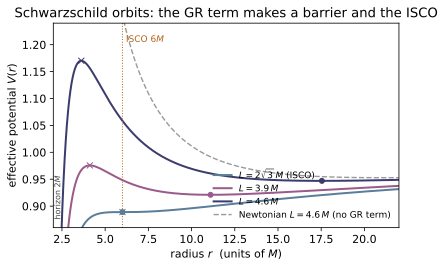
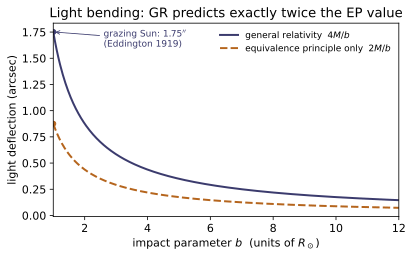
Example problems
Schwarzschild is a vacuum solution, so R_{μν}=0 and every Ricci-based scalar vanishes. Using the Kretschmann scalar K = 48M²/r⁶, decide which of r=2M and r=0 is a real (curvature) singularity and which is a coordinate artefact. Answer: r=0 is real (K→∞); r=2M is only a coordinate singularity — K(2M)=48M²/(2M)⁶ = 3/(4M⁴) is finite. The horizon is a regular one-way surface. Check: kretschmann_formula(2, 1) → 0.75; RE-11's curvature.kretschmann(schwarzschild_metric(1), [0,r,1,0.9]) ≈ 48/r⁶ for r>2M (test_kretschmann_matches_formula_and_horizon_is_finite).
In vacuum $R_{\mu\nu}=0$, so the Ricci scalar and every invariant built from $R_{\mu\nu}$ vanishes; the first surviving curvature scalar is the Kretschmann invariant
At $r=0$, $K\to\infty$: tidal forces diverge and no coordinate change removes it — a real curvature singularity, where geodesics end. At the horizon,
which is finite, so spacetime there is perfectly regular — only the $(t,r)$ chart fails (like a map's pole). Hence $r=2M$ is a coordinate singularity (the one-way event horizon) and $r=0$ the physical one. For $M=1$, $K(2M)=3/4$, matching kretschmann_formula(2, 1) → 0.75.
For a massive particle, V(r)=(1−2M/r)(1+L²/r²). Solve V'(r)=0 and show circular orbits exist only for L ≥ 2√3 M, the two roots merging at the innermost stable circular orbit. Find its radius. Answer: V'(r)=0 ⇒ Mr²−L²r+3ML²=0; real roots need L⁴≥12M²L² ⇒ L≥2√3 M; at equality r = L²/2M = 6M. So r_ISCO = 6M. Check: isco(1) → 6; isco_from_potential(1) → 6.000; circular_orbit_radius(230.5, 1) → 6 and circular_orbit_radius(0.992*30.5, 1) → None (test_isco_is_marginal_circular_orbit).
Expand $V(r)=(1-2M/r)(1+L^2/r^2)=1-\dfrac{2M}{r}+\dfrac{L^2}{r^2}-\dfrac{2ML^2}{r^3}$ and differentiate:
(after multiplying by $r^4/2$). The roots $r_\pm=\big[L^2\pm\sqrt{L^4-12M^2L^2}\big]/(2M)$ are real only when $L^4\ge12M^2L^2$, i.e. $L\ge 2\sqrt3\,M$. At equality the discriminant vanishes and the stable minimum ($r_+$) and unstable maximum ($r_-$) merge at
So $r_\text{ISCO}=6M$ — inside it no stable circular orbit exists. This is why isco(1) → 6, isco_from_potential(1) → 6.000, and circular_orbit_radius(2*3**0.5, 1) → 6, while $L$ a hair below $2\sqrt3\,M$ returns None.
For light, V_γ(r)=(1−2M/r)L²/r². Show it has a single maximum, independent of L, and locate the unstable circular photon orbit (the "photon sphere"). Answer: V_γ'(r)=L²(−2/r³+6M/r⁴)=0 ⇒ r=3M, a maximum (unstable). Hence r_photon = 3M, independent of L. Check: photon_sphere(1) → 3; photon_sphere_from_potential(1) → 3.000 (test_photon_sphere_is_maximum_of_massless_potential).
For light $V_\gamma(r)=(1-2M/r)L^2/r^2=L^2\big(r^{-2}-2Mr^{-3}\big)$, so
independent of $L$, which factors out entirely. The nature is a maximum: $V_\gamma''=L^2(6r^{-4}-24Mr^{-5})$ evaluated at $r=3M$ is $-6L^2/(243M^4)<0$, so the circular photon orbit is unstable — a light ray there can circle but the slightest nudge sends it spiralling in or out. Hence $r_\text{photon}=3M$, matching photon_sphere(1) → 3 and photon_sphere_from_potential(1) → 3.000.
The relativistic −2ML²/r³ term advances the perihelion by Δφ = 6πM/(a(1−e²)) per orbit. With Mercury's a, e and M=M_⊙, convert to arcseconds per century and compare with the historic anomaly. Answer: ≈ 42.98″/century (the famous 43″). Newtonian ellipses are closed: set M→0 and Δφ→0. Check: perihelion_precession(M_SUN, A_MERCURY, E_MERCURY) (100365.25/T_MERCURY_DAYS) * ARCSEC_PER_RAD → 42.98 (test_mercury_perihelion_precession).
The semi-latus rectum is $a(1-e^2)$, so the per-orbit advance is $\Delta\varphi=6\pi M/[a(1-e^2)]$. With $M=M_\odot=1476.6\,$m, $a=5.79\times10^{10}\,$m, $e=0.20563$,
Mercury completes $100\times365.25/87.9691\approx 415.2$ orbits per century; converting radians with $1\,\text{rad}=206264.8''$,
This is the famous $43''$ anomaly Einstein recovered. Setting $M\to0$ removes the GR $-2ML^2/r^3$ term and $\Delta\varphi\to0$ — Newtonian ellipses close. The check returns 42.98.
A ray grazing the Sun bends by 4M/b. Evaluate for b=R_⊙, and explain why it is twice the equivalence-principle value 2M/b (0.87″) of RE-10. Answer: 4M_⊙/R_⊙ = 8.49×10⁻⁶ rad = 1.75″ (Eddington 1919). The EP "accelerating elevator" captures only the time-dilation half; the spatial curvature g_{rr}=1/f supplies the missing half — exactly doubling the bend. Check: light_deflection(M_SUN, R_SUN)ARCSEC_PER_RAD → 1.751; and it equals 2 (2*M_SUN/R_SUN) (test_solar_light_deflection).
The full Schwarzschild deflection is $\Delta\varphi=4M/b$. Grazing the Sun, $b=R_\odot$:
The equivalence-principle "falling photon" of RE-10 gives only $2M/b=0.88''$: that is the contribution of gravitational time dilation ($g_{tt}$) alone. The spatial curvature $g_{rr}=1/f=(1-2M/r)^{-1}$ — which a uniformly accelerating elevator cannot mimic — supplies an equal second half, doubling the bend to $4M/b$. Hence light_deflection(M_SUN, R_SUN)ARCSEC_PER_RAD → 1.751, exactly 2 (2*M_SUN/R_SUN).
From 1+z = √((1−2M/r_obs)/(1−2M/r_emit)), recover (a) the weak-field Pound–Rebka result for r≫M, and (b) the behaviour as the emitter approaches the horizon. Answer: (a) z ≈ M/r_emit − M/r_obs = ΔΦ/c² — RE-10's gh/c². (b) as r_emit→2M, z→∞: infinite redshift, the emitter freezes and fades to a distant observer. Check: gravitational_redshift(1e6, 1e9, 1) ≈ 1e-6 − 1e-9 (test_redshift_weak_field_limit); gravitational_redshift(2.0001, 1e9, 1) ≈ 140 and grows (test_redshift_diverges_at_horizon).
Write $1+z=\sqrt{(1-2M/r_\text{obs})/(1-2M/r_\text{emit})}$. (a) For $r\gg M$ expand each root: $\sqrt{1-2M/r_\text{obs}}\approx1-M/r_\text{obs}$ and $(1-2M/r_\text{emit})^{-1/2}\approx1+M/r_\text{emit}$, so
RE-10's Pound–Rebka $gh/c^2$; for $(10^6,10^9,1)$ this is $10^{-6}-10^{-9}=9.99\times10^{-7}$, the returned $z$. (b) As $r_\text{emit}\to2M$ the denominator $1-2M/r_\text{emit}\to0^+$ while the numerator stays finite, so $1+z\to\infty$: light from just above the horizon is infinitely redshifted and the emitter appears to freeze and fade to black. At $r_\text{emit}=2.0001M$, gravitational_redshift(2.0001, 1e9, 1) ≈ 140 and climbs without bound.
An observer falls radially from rest at r_0. Argue that they reach r=2M (and r=0) in finite proper time, yet a distant observer using Schwarzschild t never sees them cross. Reconcile the two. Answer: dτ stays finite through r=2M, but dt/dr ∝ 1/f → ∞ there, so t ~ −2M ln(r−2M) → ∞. Both are correct: t is a bad coordinate at the horizon (P1), while the infaller's proper time is physical. The distant image asymptotes to the horizon, redshifting to black (P6). (No single code check — this is the global statement behind the redshift divergence.)
For radial infall from rest at $r_0$ the conserved energy is $E=\sqrt{1-2M/r_0}$, and the radial equation gives $(dr/d\tau)^2=E^2-(1-2M/r)=\dfrac{2M}{r}-\dfrac{2M}{r_0}$ — finite and nonzero at $r=2M$. Integrating $d\tau=dr/\sqrt{2M/r-2M/r_0}$ converges right through the horizon down to $r=0$ in finite proper time $\sim\pi M(r_0/2M)^{3/2}$. But the bookkeeper's clock obeys $dt/d\tau=E/f$ with $f=1-2M/r$, so
Both statements hold because $t$ is a bad coordinate at $r=2M$ (the coordinate singularity of P1): it diverges even though the infaller's proper time — the physical clock — is finite. The distant image therefore asymptotes to the horizon, redshifting to black (P6).
Run the worked code: cd RE/RE-14_schwarzschild_black_holes/code && python3 schwarzschild.py
RE-15 — Cosmology: the FLRW universe
Relativity trunk · RE/RE-15_cosmology_flrw · open in the Teaching Network
The cosmological principle (homogeneity + isotropy) ⇒ the FLRW metric ds² = −dt² + a(t)²[dr²/(1−kr²) + r²dΩ²], k = +1/0/−1; the scale factor a(t), the Hubble rate H = ȧ/a, and cosmological redshift 1+z = a₀/a_emit; feeding FLRW into the Einstein equations to get the Friedmann equations; critical density ρ_c = 3H²/8π, the density parameter Ω = ρ/ρ_c, and the flat/open/closed trichotomy; the three eras (radiation a∝t^½, matter a∝t^⅔, de Sitter a∝e^{Ht}); and the fluid equation ρ̇ = −3H(ρ+p) (= ∇_μT^{μν}=0).
Key equations
Example problems
A quasar is observed at redshift z = 3. By what factor has the universe expanded since the light was emitted? What was the scale factor a_emit (with a₀ = 1)? Answer: 1+z = a₀/a_emit = 4, so the universe has expanded by a factor 4 and a_emit = 1/(1+z) = 0.25. Check: redshift(0.25) → 3.0; redshift(0.5) → 1.0 (the canonical a=½ ⇒ z=1).
Wavelengths stretch with the scale factor, so the observed-to-emitted ratio is $1+z = a_{\rm obs}/a_{\rm emit}$. With $a_0=1$ today,
For $z=3$: $1+z=4$, so every comoving length — and the universe — has grown by a factor $\mathbf{4}$, and $a_{\rm emit}=1/4=0.25$. The check inverts this: redshift returns $z=a_{\rm obs}/a_{\rm emit}-1$, so redshift(0.25)$=1/0.25-1=3.0$ and the canonical half-size universe redshift(0.5)$=1/0.5-1=1.0$.
For the flat FLRW metric, the time–time Einstein component is G₀₀ = 3(ȧ/a)² (add +3k/a² when k≠0). Setting G₀₀ = 8πT₀₀ = 8πρ gives Friedmann I. Verify the coefficient is exactly 3 by feeding the metric to RE-11’s curvature engine. Answer: G₀₀ = 3[(ȧ/a)² + k/a²] = 3(ȧ²+k)/a² ⇒ (ȧ/a)² = 8πρ/3 − k/a². Check: de Sitter a=e^{Ht}: G00_from_flrw(de_sitter_scale_factor(1.0), 0, t) ≈ 3H² = 3; matter a=t^{2/3}: G00_from_flrw(power_law_scale_factor(2/3), 0, 1.0) ≈ 3·(2/3)² = 4/3 (test_flrw_implies_friedmann_*, loose FD tol).
Hand the flat FLRW metric to the curvature engine and its time–time Einstein component comes back as
The source is a comoving perfect fluid, whose energy density is $T_{00}=\rho$ (with $g_{00}=-1$, $u_0=-1$, so $T_{00}=(\rho+p)u_0^2+p\,g_{00}=\rho$). The $00$ field equation $G_{00}=8\pi T_{00}$ is therefore
the first Friedmann equation — the coefficient $3$ is not assumed but read off $G_{00}$. The finite-difference curvature confirms it: for de Sitter $a=e^{Ht}$ ($H=1$, $k=0$) G00_from_flrw $\to3.00\approx3H^2$, and for matter $a=t^{2/3}$ at $t=1$ it gives $1.34\approx3(2/3)^2=4/3$.
For a flat universe with one fluid p = wρ, integrate the fluid equation to get ρ(a), then use Friedmann I to get a(t). Specialise to radiation (w=⅓), matter (w=0), and a cosmological constant (w=−1). Answer: ρ ∝ a^{−3(1+w)}, a ∝ t^{2/(3(1+w))} (for w≠−1). Radiation ρ∝a⁻⁴, a∝t^{1/2}; matter ρ∝a⁻³, a∝t^{2/3}; Λ: ρ=const, a∝e^{Ht}. Check: era_density(2.0, 1/3)=2⁻⁴, era_density(2.0, 0)=2⁻³, era_density(2.0,−1)=1; each era zeroes both Friedmann residuals (test_three_eras_satisfy_both_friedmann).
For $p=w\rho$ the fluid equation $\dot\rho=-3H(\rho+p)$ becomes $\dot\rho/\rho=-3(1+w)\,\dot a/a$, which integrates to
Feed this into flat Friedmann I, $(\dot a/a)^2=\tfrac{8\pi}{3}\rho\propto a^{-3(1+w)}$. Trying $a\propto t^q$ gives $\dot a/a=q/t\propto a^{-3(1+w)/2}\propto t^{-3q(1+w)/2}$, so matching powers of $t$ requires $-1=-3q(1+w)/2$, i.e.
Radiation $w=\tfrac13$: $\rho\propto a^{-4}$, $a\propto t^{1/2}$; matter $w=0$: $\rho\propto a^{-3}$, $a\propto t^{2/3}$; the $\Lambda$ case $w=-1$ is special ($1+w=0$), giving $\rho=$ const and exponential $a\propto e^{Ht}$. The density scalings are exactly era_density: era_density(2.0, 1/3)$=2^{-4}$, era_density(2.0, 0)$=2^{-3}$, era_density(2.0,−1)$=1$, and each $a(t)$ zeroes both Friedmann residuals (test_three_eras_satisfy_both_friedmann).
Define ρ_c = 3H²/8π and Ω = ρ/ρ_c. From Friedmann I (Λ=0) show that the sign of Ω−1 is the sign of k, i.e. the universe is closed/flat/open according as Ω ≷ 1. Answer: Ω − 1 = k/(a²H²), so Ω>1 ⇔ k=+1 (closed), Ω=1 ⇔ k=0 (flat), Ω<1 ⇔ k=−1 (open). Check: omega(critical_density(H), H) → 1.0; on-shell closed/open densities give Ω>1/Ω<1 (test_omega_trichotomy_matches_curvature_sign).
Friedmann I with $\Lambda=0$ is $H^2=\tfrac{8\pi}{3}\rho-\tfrac{k}{a^2}$. Divide through by $H^2$ and use $\rho_c=3H^2/8\pi$, $\Omega=\rho/\rho_c=8\pi\rho/3H^2$:
Since $a^2H^2>0$, the sign of $\Omega-1$ is exactly the sign of $k$:
The density is its own geometer — weigh the universe and you know whether space curls back on itself. The check sets $\rho=\rho_c$: omega(critical_density(H), H) $\to1.0$ (flat), while the on-shell closed/open densities of test_omega_trichotomy_matches_curvature_sign give $\Omega>1$ and $\Omega<1$ respectively.
∇_μTᵘᵛ=0notes §6; RE-11 §3Show the fluid equation ρ̇ = −3H(ρ+p) is the ν=0 part of ∇_μTᵘᵛ=0, and explain why it is not an independent equation. Interpret it as dE = −p dV for a comoving volume V ∝ a³. Answer: ∇_μGᵘᵛ=0 (contracted Bianchi, RE-11 §3) forces ∇_μTᵘᵛ=0, so the fluid equation follows from the two Friedmann equations — a consistency relation. d(ρa³) = −p d(a³) is exactly Ė = −pV̇. Check: fluid_equation_residual ≈ 0 to machine precision for ρ∝a⁻³ (matter) and ρ∝a⁻⁴ (radiation) (test_fluid_equation_matter_and_radiation).
In FLRW a comoving perfect fluid has $u^\mu=(1,0,0,0)$ and $T^\mu{}_\nu=\mathrm{diag}(-\rho,p,p,p)$. The $\nu=0$ component of $\nabla_\mu T^{\mu\nu}=0$ is
where the last term supplies the pressure piece $3Hp$, giving $\dot\rho=-3H(\rho+p)$. It is not an independent law: the contracted Bianchi identity $\nabla_\mu G^{\mu\nu}=0$ (RE-11 §3) makes $\nabla_\mu T^{\mu\nu}=0$ automatic, so once the two Friedmann equations (from $G_{00}$ and $G_{ij}$) hold, this one follows — a consistency relation. Its meaning is the first law $dE=-p\,dV$ for a comoving patch $V\propto a^3$: with $E=\rho V$ and $\dot V=3HV$, $\dot E=-p\dot V$ reads $\dot\rho V+\rho(3HV)=-p(3HV)$, i.e. $\dot\rho=-3H(\rho+p)$. Numerically fluid_equation_residual vanishes to machine precision for matter $\rho\propto a^{-3}$ and radiation $\rho\propto a^{-4}$ (test_fluid_equation_matter_and_radiation).
From Friedmann II, ä/a = −(4π/3)(ρ+3p) + Λ/3, find the condition on the equation of state for the expansion to accelerate (ä>0) with Λ=0. Why does de Sitter (p=−ρ) accelerate? Answer: ä>0 ⇔ ρ+3p<0 ⇔ w<−1/3. Dark energy w=−1 (p=−ρ) satisfies it; then ä/a = (8π/3)ρ = H² > 0 and a ∝ e^{Ht}. Check: friedmann_2_residual(e^{H}, H²e^{H}, 3H²/8π, −3H²/8π) ≈ 0 — de Sitter solves Friedmann II with p=−ρ (test_de_sitter_satisfies_both_friedmann_two_ways).
With $\Lambda=0$ the acceleration equation is $\ddot a/a=-\tfrac{4\pi}{3}(\rho+3p)$. Since $a>0$ and, for ordinary matter, $\rho>0$, the expansion accelerates iff the bracket is negative:
So pressure gravitates — it is $\rho+3p$, not $\rho$, that sources deceleration — and only a sufficiently negative pressure overturns the pull. Dark energy with $w=-1$ ($p=-\rho$) clears the bar: then $\rho+3p=-2\rho$, and using flat Friedmann I ($H^2=\tfrac{8\pi}{3}\rho$),
a constant — so $a\propto e^{Ht}$, de Sitter. The check confirms it: friedmann_2_residual(e^{H}, H²e^{H}, 3H²/8π, −3H²/8π) $\approx0$, de Sitter solving Friedmann II with $p=-\rho$ (test_de_sitter_satisfies_both_friedmann_two_ways).
Run the worked code: cd RE/RE-15_cosmology_flrw/code && python3 cosmology.py
RE-16 — Gravitational Waves
Relativity trunk · RE/RE-16_gravitational_waves · open in the Teaching Network
Linearized gravity g = η + h, |h| ≪ 1; the trace-reversed h̄_{μν} and the Lorenz-gauge wave equation □h̄_{μν} = −16πT_{μν}; the transverse-traceless (TT) gauge and its two polarizations h_+, h_×; the area-preserving deformation of a ring of free particles; the quadrupole formula (no monopole or dipole radiation) and its luminosity; and the binary chirp with the chirp mass M_c.
Key equations
Example problems
From h̄_{μν} = h_{μν} − ½η_{μν}h, show h̄ ≡ η^{μν}h̄_{μν} = −h, and hence that reversing the trace again, h_{μν} = h̄_{μν} − ½η_{μν}h̄, recovers h. Why is this the natural variable for the field equation? Answer: h̄ = h − ½·4·h = −h; substituting gives back h_{μν}. In Lorenz gauge ∂^μh̄_{μν}=0 the linearized G_{μν} is just −½□h̄_{μν}, so the field equation becomes □h̄_{μν} = −16πT_{μν} — one wave equation per component.
Contract $\bar h_{\mu\nu}=h_{\mu\nu}-\tfrac12\eta_{\mu\nu}h$ with $\eta^{\mu\nu}$, using $\eta^{\mu\nu}\eta_{\mu\nu}=\delta^\mu_\mu=4$:
Feeding this into the reverse map recovers the original, so trace-reversal is an involution:
It is the natural variable because in Lorenz gauge $\partial^\mu\bar h_{\mu\nu}=0$ the linearized Einstein tensor collapses to $G_{\mu\nu}=-\tfrac12\Box\bar h_{\mu\nu}$, turning $G_{\mu\nu}=8\pi T_{\mu\nu}$ into one decoupled wave equation per component, $\Box\bar h_{\mu\nu}=-16\pi T_{\mu\nu}$ (notes §1). No code check — structural.
A plane wave h̄_{μν} = ε_{μν}cos(k_λx^λ) solves the vacuum equation □h̄=0. Show this forces k_λk^λ = 0 and therefore ω = |𝐤| — gravitational waves move at c. Answer: □cos(k·x) = −(k_λk^λ)cos(k·x); vanishing requires k²=0, i.e. −ω²+|𝐤|²=0. Check: wave_equation_residual(0.1,0.05, dispersion_omega(1.0), 1.0) ≈ 0; with ω=1.3, k=1.0 it is ≈0.069 ≠ 0 (off the light cone).
Acting with $\Box=\eta^{\mu\nu}\partial_\mu\partial_\nu$ on $\bar h_{\mu\nu}=\varepsilon_{\mu\nu}\cos(k_\lambda x^\lambda)$, each $\partial_\mu$ pulls down a factor $k_\mu$:
So $\Box\bar h_{\mu\nu}=-(k_\lambda k^\lambda)\bar h_{\mu\nu}$ vanishes for all $x$ only if $k_\lambda k^\lambda=0$. With $k^\mu=(\omega,\mathbf k)$ in mostly-plus signature, $k_\lambda k^\lambda=-\omega^2+|\mathbf k|^2=0$, i.e. $\omega=|\mathbf k|$ and phase speed $\omega/|\mathbf k|=1=c$. The code's residual coefficient is exactly $\omega^2-k^2$: wave_equation_residual(0.1,0.05,dispersion_omega(1.0),1.0) $=0$ on-shell, while $\omega=1.3,\,k=1$ gives $\approx0.069\neq0$ (off the light cone).
Start from 10 components of symmetric h_{μν}. Subtract the 4 Lorenz conditions, then the 4 residual-gauge conditions. How many physical polarizations remain? Write the TT block for a +z wave. Answer: 10 − 4 − 4 = 2. With h_{0μ}=0, h^i_i=0, k^μh_{μν}=0 and k^μ=ω(1,0,0,1): h_{xx}=−h_{yy}=h_+, h_{xy}=h_{yx}=h_×, all else 0. Check: is_transverse_traceless(tt_wave(h_+,h_×,ω,t,z)) → True; spatial trace = 0 exactly.
A symmetric $h_{\mu\nu}$ has $10$ independent components. Lorenz gauge $\partial^\mu\bar h_{\mu\nu}=0$ imposes $4$ linear conditions ($\to6$); the residual freedom — any $\xi^\mu$ with $\Box\xi^\mu=0$ preserves Lorenz gauge — supplies $4$ more ($\to2$). For $k^\mu=\omega(1,0,0,1)$, the condition $h_{0\mu}=0$ together with transversality $k^\mu h_{\mu\nu}=0$ kills the time and $z$ rows/columns, and tracelessness $h^i{}_i=0$ forces $h_{xx}=-h_{yy}$, leaving
Thus $10-4-4=2$ physical polarizations. is_transverse_traceless(tt_wave(h_+,h_×,ω,t,z)) returns True, with spatial trace $h_{xx}+h_{yy}+h_{zz}=0$ exactly.
+ and × patterns and areaZee §IX.4; notes §4Using δξ^i = ½h^i_jξ^j at phase 0, find where the unit points (1,0) and (0,1) go under a pure h_+, and (1,±1)/√2 under a pure h_×. Then show the ring's area is unchanged to linear order. Answer: h_+: (1,0)→(1+h_+/2, 0), (0,1)→(0, 1−h_+/2) — stretch x, squeeze y. h_×: the diagonals scale by 1±h_×/2. Area factor det(I+½h) = 1 − ¼(h_+²+h_ײ)cos² = 1 + O(h²) — traceless ⇒ area-preserving. Check: ring_response(0.2,0,0,[(1,0),(0,1)]) → [(1.1,0),(0,0.9)]; area_change(0.2,0,0) ≈ −0.01 (O(h²)).
At phase $0$ ($\cos=1$) the geodesic-deviation shift is $\delta\xi^i=\tfrac12 h^i{}_j\xi^j$. Pure $h_+$ has $h^x{}_x=h_+,\,h^y{}_y=-h_+$, so $(1,0)\to(1+\tfrac12 h_+,\,0)$ and $(0,1)\to(0,\,1-\tfrac12 h_+)$ — $x$ stretched, $y$ squeezed; for $h_+=0.2$ these are $(1.1,0)$ and $(0,0.9)$. Pure $h_\times$ has $h^x{}_y=h^y{}_x=h_\times$, so the diagonal $(1,1)/\sqrt2$ scales by $1+\tfrac12 h_\times$ and $(1,-1)/\sqrt2$ by $1-\tfrac12 h_\times$. The area factor is
zero at linear order because $h$ is traceless. ring_response(0.2,0,0,[(1,0),(0,1)])$\to[(1.1,0),(0,0.9)]$ and area_change(0.2,0,0)$\approx-0.01=-\tfrac14(0.2)^2$ — second order.
Explain why mass conservation kills monopole radiation and momentum conservation kills dipole radiation, so a spherically symmetric (even pulsating) source emits no gravitational waves. Confirm the trace-free quadrupole of a symmetric octahedron vanishes. Answer: monopole ∫T⁰⁰=M (M̈=0); dipole ∫y_iT⁰⁰ has d/dt = P_i conserved (d²/dt²=0). Radiation starts at the quadrupole Q_{ij}=∫y_iy_jT⁰⁰. A symmetric shell has isotropic Q_{ij} ∝ δ_{ij}, so the trace-free part Q̄_{ij}=0. Check: reduced_quadrupole([(2,±R,0,0),(2,0,±R,0),(2,0,0,±R)]) ≈ 0 ⇒ quadrupole_luminosity ≈ 0; a bar [(1,2,0,0),(1,−2,0,0)] gives |Q̄|>0.
Far-field $\bar h_{ij}$ is built from time derivatives of the moments of $T^{00}$. The monopole $\int T^{00}d^3y=M$ is the total mass — conserved, so $\ddot M=0$: no monopole radiation. The dipole $\int y_i T^{00}d^3y$ is the center of mass; its first derivative is the total momentum $P_i$, conserved, so its second derivative vanishes: no dipole radiation. Radiation therefore starts at the quadrupole $Q_{ij}=\int y_iy_jT^{00}d^3y$. A spherically symmetric shell has isotropic $Q_{ij}\propto\delta_{ij}$, whose trace-free part $\bar Q_{ij}=Q_{ij}-\tfrac13\delta_{ij}Q$ vanishes. reduced_quadrupole of the symmetric octahedron gives $\max|\bar Q_{ij}|\approx1.3\times10^{-15}$ (luminosity $\approx6.7\times10^{-31}\approx0$), whereas a bar along $x$ gives $\bar Q_{xx}=+5.33,\ \bar Q_{yy}=\bar Q_{zz}=-2.67\neq0$ and radiates.
For a circular binary, show f_GW = 2f_orb = (1/π)√(M/r³). Given the inspiral law ḟ = (96/5)π^{8/3}M_c^{5/3}f^{11/3}, what single mass combination does a measured (f, ḟ) determine? Evaluate it for GW150914's 36 + 29 M_⊙. Answer: the quadrupole repeats twice per orbit ⇒ f_GW=2f_orb; ω_orb²=M/r³ (Kepler). (f,ḟ) fixes the chirp mass M_c=(m₁m₂)^{3/5}/(m₁+m₂)^{1/5}. For 36+29: M_c ≈ 28 M_⊙. Check: gw_frequency(36,29,r) == 2*orbital_frequency(36,29,r); chirp_mass(36,29) ≈ 28.10; chirp_mass(30,30) = 30/2^{1/5} ≈ 26.12.
A binary's mass quadrupole is invariant under a half-turn $\varphi\to\varphi+\pi$, so it returns to the same shape twice per orbit: $f_{\rm GW}=2f_{\rm orb}$. Kepler's third law for total mass $M$ at separation $r$ gives $\omega_{\rm orb}^2=M/r^3$, hence $f_{\rm orb}=\tfrac1{2\pi}\sqrt{M/r^3}$ and $f_{\rm GW}=\tfrac1\pi\sqrt{M/r^3}$. Equating the quadrupole luminosity to the orbital energy loss yields $\dot f=\tfrac{96}{5}\pi^{8/3}\mathcal M_c^{5/3}f^{11/3}$, in which the masses enter only through the chirp mass $\mathcal M_c=(m_1m_2)^{3/5}/(m_1+m_2)^{1/5}$ — so a measured $(f,\dot f)$ determines $\mathcal M_c$ alone. For $36+29\,M_\odot$, chirp_mass(36,29)$\approx28.10\,M_\odot$; the equal-mass check chirp_mass(30,30)$\approx26.12=30/2^{1/5}$, and gw_frequency(36,29,r)$=2\cdot$orbital_frequency(36,29,r).
Electromagnetic radiation starts at the dipole (∼1/c³); gravitational radiation starts at the quadrupole (∼1/c⁵). Argue from the conservation laws why gravity has no dipole term, and what that implies for detectability. Answer: there is no negative gravitational "charge," and the mass dipole's derivative is the conserved total momentum — so the dipole cannot radiate. The leading 1/c⁵ suppression is why even M_⊙-scale compact binaries produce strains h ∼ 10^{−21}, requiring km-scale interferometers. (No code check — structural.)
Both points follow from conservation laws. Electromagnetism has charges of both signs, so the charge dipole $\int\rho\,\mathbf x\,d^3x$ can oscillate freely and radiates at order $1/c^3$. Gravity has only positive mass — no negative gravitational charge — and the mass dipole $\int\rho\,\mathbf x\,d^3x=M\,\mathbf x_{\rm cm}$ has time derivative equal to the total momentum $\mathbf P$, which is conserved; its second derivative therefore vanishes and the dipole cannot source radiation. Radiation is pushed up to the quadrupole, costing a further $1/c^2$ for an overall $1/c^5$. Since $G/c^5\approx10^{-53}$ in SI units, even $M_\odot$-scale compact binaries produce strains $h\sim10^{-21}$, which is why detection demands km-scale interferometers. No code check — structural.
Run the worked code: cd RE/RE-16_gravitational_waves/code && python3 gravitational_waves.py
RE-17 — Exact solutions & numerical relativity *(advanced)*
Relativity trunk · RE/RE-17_exact_solutions_numerical · open in the Teaching Network
What an exact solution is — a metric for which the field equations hold identically — and how to check one numerically: Kerr (rotating, vacuum, R_{μν}=0; horizons r_±=M±√(M²−a²), ergosphere, frame dragging, ring singularity); Reissner–Nordström (charged, R_{μν}≠0 but scalar-flat R=0); de Sitter (Λ-vacuum, G_{μν}+Λg_{μν}=0, R=4Λ). Then the move to numerical relativity: the 3+1 / ADM split (lapse α, shift β^i, spatial γ_{ij}, extrinsic K_{ij}) into constraints + evolution, and the Hamiltonian constraint initial data must satisfy.
Key equations
Example problems
From Δ = r² − 2Mr + a² = 0 find the Boyer–Lindquist horizons, and from g_{tt}=0 the equatorial static-limit radius. For what a is there a horizon? Answer: r_± = M ± √(M²−a²), real iff a ≤ M (a=M extremal, a>M naked). Static limit at the equator: r_E = 2M > r_+ — the ergoregion. Check: kerr_horizons(1, 0.6) → (0.2, 1.8); kerr_ergosphere(1, 0.6, math.pi/2) → 2.0; kerr_horizons(1, 1.5) raises ValueError (naked singularity).
The horizons are the roots of $\Delta=r^2-2Mr+a^2=0$. The quadratic formula gives
real iff $M^2-a^2\ge0$, i.e. $a\le M$ ($a=M$ extremal, $a>M$ a naked ring singularity). For $M=1,a=0.6$: $\sqrt{1-0.36}=0.8$, so $r_\pm=1\pm0.8=(0.2,\,1.8)$. The static limit is $g_{tt}=-(1-2Mr/\Sigma)=0\Rightarrow\Sigma=r^2+a^2\cos^2\theta=2Mr$; at the equator $\cos\theta=0$ gives $r^2=2Mr$, so $r_E=2M=2>r_+$ — the gap is the ergoregion. These match kerr_horizons(1,0.6)$=(0.2,1.8)$, kerr_ergosphere(1,0.6,\pi/2)$=2.0$, and kerr_horizons(1,1.5) raising ValueError since $M^2-a^2<0$.
Argue R_{μν}=0 for Kerr (it is a vacuum metric), and show a→0 returns Schwarzschild. Why does feeding the metric to ricci test the components? Answer: a wrong term breaks R_{μν}=0, so verify_vacuum (= max|R_{μν}|) is a componentwise validator. At a=0: Σ→r², Δ→r²−2Mr, g_{tφ}→0, giving diag(−(1−2M/r), 1/(1−2M/r), r², r²sin²θ). Check: verify_vacuum(kerr_metric(1,0.5), [0,8,1.0,0.7]) ≈ 1e-6 (≈0); kerr_metric(1,0) matches curvature.schwarzschild_metric(1) componentwise.
Kerr was built to solve the vacuum equations $R_{\mu\nu}=0$ (equivalently $G_{\mu\nu}=0$, since $R=0$ in vacuum). The code never assumes this — it checks it: handing $g_{\mu\nu}$ to RE-11's finite-difference ricci returns the actual Ricci tensor, so verify_vacuum $=\max_{\mu\nu}|R_{\mu\nu}|$ is a componentwise validator — one mistyped term (say the cross term $g_{t\phi}$) would leave a non-zero residual and fail the gate. Setting $a=0$ collapses $\Sigma=r^2+a^2\cos^2\theta\to r^2$, $\Delta=r^2-2Mr+a^2\to r^2-2Mr$, and the frame-dragging term $g_{t\phi}=-2Mar\sin^2\theta/\Sigma\to0$, leaving
exactly Schwarzschild. Numerically verify_vacuum(kerr_metric(1,0.5),[0,8,1.0,0.7])$\approx9.9\times10^{-7}\approx0$ (pure finite-difference noise), and kerr_metric(1,0) matches curvature.schwarzschild_metric(1) componentwise.
With f = 1 − 2M/r + Q²/r², RN is sourced by the EM field. Show R_{μν} ≠ 0 but the Ricci scalar R = 0. Why is R=0? Answer: the electromagnetic stress-energy is trace-free in 4-D (T^μ_μ=0), and R = −8πT^μ_μ = 0; but T_{μν}≠0, so individual R_{μν}=O(Q²/r⁴)≠0. Check: verify_vacuum(reissner_nordstrom_metric(1,0.9), [0,3,1,0.7]) ≈ 0.09 (≠0); curvature.ricci_scalar(...) ≈ 1e-7 (≈0). Q→0 ⇒ both → Schwarzschild.
Trace Einstein's equation $G_{\mu\nu}=8\pi T_{\mu\nu}$: in 4-D $g^{\mu\nu}G_{\mu\nu}=-R$, so $R=-8\pi T^{\mu}{}_{\mu}$. The electromagnetic stress-energy $T^{\rm EM}_{\mu\nu}\propto F_{\mu\alpha}F_{\nu}{}^{\alpha}-\tfrac14 g_{\mu\nu}F_{\alpha\beta}F^{\alpha\beta}$ is trace-free in four dimensions, $T^{\mu}{}_{\mu}=0$, hence
even though $T_{\mu\nu}\neq0$. So the Ricci scalar vanishes while individual components survive: since $R=0$ the mixed Ricci equals the mixed Einstein tensor, $R^{\mu}{}_{\nu}=G^{\mu}{}_{\nu}$, giving $G^{t}{}_{t}=G^{r}{}_{r}=-Q^2/r^4$ and $G^{\theta}{}_{\theta}=G^{\phi}{}_{\phi}=+Q^2/r^4$; the covariant components are then $O(Q^2/r^2)$, e.g. $R_{\theta\theta}=r^2R^{\theta}{}_{\theta}=Q^2/r^2$. At $r=3,\,Q=0.9$ this is $0.81/9=0.09$ — exactly verify_vacuum(reissner_nordstrom_metric(1,0.9),[0,3,1,0.7])$\approx0.09\neq0$ — while curvature.ricci_scalar(...)$\approx10^{-7}\approx0$; sending $Q\to0$ takes both to zero (Schwarzschild, Ricci-flat again).
For f = 1 − Λr²/3, show de Sitter solves G_{μν} + Λg_{μν} = 0 and hence R = 4Λ in 4-D. Where is the cosmological horizon? Answer: taking the trace of G_{μν}+Λg_{μν}=0 gives −R + 4Λ = 0, so R = 4Λ (and R_{μν}=Λg_{μν}). Horizon at f=0, i.e. r = √(3/Λ). Check: verify_einstein_lambda(de_sitter_metric(0.03), [0,3,1,0.7], 0.03) ≈ 6e-7; curvature.ricci_scalar(de_sitter_metric(0.03), [0,3,1,0.7]) ≈ 0.12 = 4·0.03.
With a cosmological constant the vacuum equation reads $G_{\mu\nu}+\Lambda g_{\mu\nu}=0$. Contract with $g^{\mu\nu}$, using $g^{\mu\nu}G_{\mu\nu}=-R$ and $g^{\mu\nu}g_{\mu\nu}=4$ in 4-D:
Substituting back, $R_{\mu\nu}=\tfrac12 R\,g_{\mu\nu}-\Lambda g_{\mu\nu}=(2\Lambda-\Lambda)g_{\mu\nu}=\Lambda g_{\mu\nu}$ — constant curvature, the Ricci tensor proportional to the metric. The cosmological horizon sits where the metric function degenerates, $f=1-\Lambda r^2/3=0$, i.e. $r=\sqrt{3/\Lambda}$. For $\Lambda=0.03$ everything matches: verify_einstein_lambda(de_sitter_metric(0.03),[0,3,1,0.7],0.03)$\approx6\times10^{-7}\approx0$, and curvature.ricci_scalar(de_sitter_metric(0.03),[0,3,1,0.7])$\approx0.12=4\cdot0.03$, confirming $R=4\Lambda$.
Define the lapse α, shift β^i, and spatial metric γ_{ij} of a t=const slice. Compute them for Minkowski (inertial) and for a static g_{tt}=−f. Answer: α = 1/√(−g^{tt}), β^i = γ^{ij}g_{0j}, γ_{ij}=g_{ij}. Minkowski: α=1, β=0, γ=δ_{ij}. Static diagonal: g^{tt}=−1/f, so α=√f, β=0. Check: adm_decompose(curvature.minkowski_metric(), [0,1,1,0.5]) → (1.0, [0,0,0], I₃); adm_decompose(curvature.schwarzschild_metric(1), [0,8,1,0.7])[0] ≈ √(1−2/8)=0.866.
Foliate spacetime on $t=x^0=\text{const}$. The intrinsic (spatial) metric is just the lower block $\gamma_{ij}=g_{ij}$; the lapse and shift carry the time information via
The lapse is read from the inverse metric because $g^{tt}=-1/\alpha^2$. For inertial Minkowski $g=\mathrm{diag}(-1,1,1,1)$: $g^{tt}=-1\Rightarrow\alpha=1$, no off-diagonal $g_{0i}\Rightarrow\beta^i=0$, and $\gamma=\delta_{ij}$ — flat space sliced flatly. For any static diagonal metric with $g_{tt}=-f$ the inverse gives $g^{tt}=-1/f$, so $\alpha=\sqrt{f}$ and again $\beta=0$. These reproduce adm_decompose(curvature.minkowski_metric(),[0,1,1,0.5])$=(1.0,[0,0,0],I_3)$ and the Schwarzschild lapse adm_decompose(curvature.schwarzschild_metric(1),[0,8,1,0.7])[0]$\approx\sqrt{1-2/8}=0.866$.
A t=const Schwarzschild slice is a moment of time symmetry (K_{ij}=0). What must its intrinsic scalar curvature R^{(3)} be, and why? Is the slice flat? Answer: the Hamiltonian constraint R^{(3)}+K²−K_{ij}K^{ij}=16πρ with K_{ij}=0, ρ=0 forces R^{(3)}=0 — the slice is scalar-flat. It is not flat: the spatial metric is γ_{rr}=1/(1−2M/r)≠1 (the Flamm paraboloid), with nonzero 3-Riemann/3-Ricci. Scalar-flat ⇏ flat. Check: hamiltonian_constraint_flat(curvature.schwarzschild_metric(1), [0,6,1,0.7]) ≈ 2e-8 (≈0); but spatial_slice_metric(...)([6,1,0.7])[0][0] = 1/(1−1/3) = 1.5 ≠ 1.
The Hamiltonian constraint is $R^{(3)}+K^2-K_{ij}K^{ij}=16\pi\rho$. A moment of time symmetry means the slice is instantaneously at rest, $K_{ij}=0$ (so $K=0$), and the Schwarzschild exterior is vacuum, $\rho=0$; every term but the first drops:
The slice must be scalar-flat. That is not the same as flat: the induced 3-metric has $\gamma_{rr}=1/(1-2M/r)\neq1$ (the Flamm paraboloid), with non-zero 3-Riemann and 3-Ricci — only the particular contraction $R^{(3)}=\gamma^{ij}R^{(3)}_{ij}$ cancels. The code confirms both at once: hamiltonian_constraint_flat(curvature.schwarzschild_metric(1),[0,6,1,0.7])$\approx2.5\times10^{-8}\approx0$ (so $R^{(3)}=0$), while spatial_slice_metric(...)([6,1,0.7])[0][0]$=1/(1-1/3)=1.5\neq1$ — curved, yet scalar-flat, exactly the identity a numerical-relativity code enforces on its initial data.
Run the worked code: cd RE/RE-17_exact_solutions_numerical/code && python3 exact_solutions.py